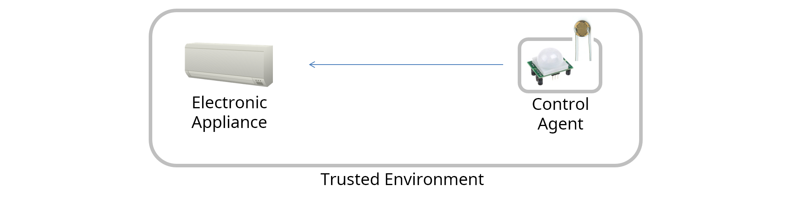
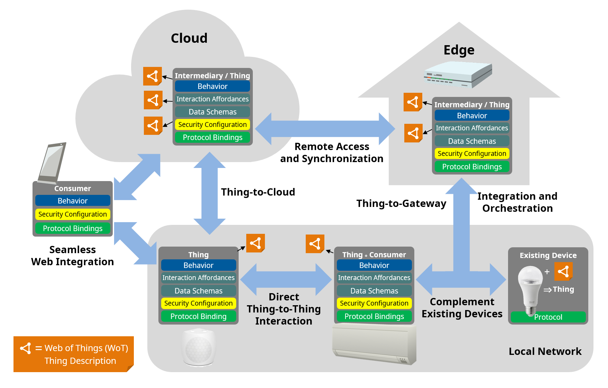

The W3C Web of
Things (WoT) enables interoperability across IoT platforms and
application domains. The goal of the WoT is to preserve and
complement existing IoT standards and solutions. The W3C WoT architecture is designed
to describe what exists, and only prescribes new mechanisms when
necessary.
This WoT Architecture specification describes the
abstract architecture for the W3C Web of Things. This abstract
architecture is based on requirements that were derived from use
cases for multiple application domains. Several modular building
blocks were identified whose detailed specifications are given in
other documents. This document describes how these building blocks
are related and work together. The WoT abstract architecture
defines a basic conceptual framework that can be mapped onto a
variety of concrete deployment scenarios, several examples of which
are given. However, the abstract architecture described in this
specification does not itself define concrete mechanisms or
prescribe any concrete implementation.
Sections 4 and 5 (Application Domains and Common Deployment Patterns)
explain ways to use WoT. These sections are self contained, do not
contain any assertion and other specifications do not depend on
these sections.
Section 6 Abstract WoT System
Architecture, explains architectural elements of the
W3C WoT. This
section is normative and contains assertions that are relevant for
WoT implementations.
Section 9 Example WoT
Deployments provides various examples of how the Web of Things
(WoT) abstract architecture may be instantiated when devices and
services that implement the Thing and Consumer roles interact in
different network topologies.
Section 10 Security
Considerations and Section 11 Privacy Considerations are
normative; they summarize some general issues and provide
guidelines to help preserve the security and privacy of concrete
WoT implementations.
Status of This Document
This section describes the status of this document at the
time of its publication. A list of current W3C publications and the latest
revision of this technical report can be found in the W3C technical reports index
at https://www.w3.org/TR/.
At the time of CR transition, due to insufficient implementation
experience the following features are at risk:
These represent best practices but often relate to deployment
policy rather than implementations and in some cases are difficult
to validate. The intention is to complete as many of these as
possible by PR; those that cannot be validated but that represent
best-practice recommendations will be converted into informative
statements.
At-risk assertions are marked with yellow
highlighting.
The Web of Things Working Group intends to submit this document
for consideration as a W3C Proposed Recommendation
after at least the minimum CR review period has passed. However,
before PR transition is requested, any features or assertions
currently marked as at-risk that do not have at least two
implementations at that time will either be removed or converted
into informative statements, as appropriate.
Publication as a Candidate Recommendation does not imply
endorsement by W3C
and its Members. A Candidate Recommendation Snapshot has received
wide
review, is intended to gather implementation
experience, and has commitments from Working Group members to
royalty-free
licensing for implementations.
This Candidate Recommendation is not expected to advance to
Proposed Recommendation any earlier than 11 January 2023.
This document was produced by a group operating under the
W3C Patent Policy.
W3C maintains a
public list of any patent
disclosures made in connection with the deliverables of the
group; that page also includes instructions for disclosing a
patent. An individual who has actual knowledge of a patent which
the individual believes contains Essential
Claim(s) must disclose the information in accordance with
section
6 of the W3C Patent
Policy.
The goals of the Web of Things (WoT) are to improve the
interoperability and usability of the Internet of Things (IoT).
Through a collaboration involving many stakeholders over many
years, several building blocks have been identified that help
address these challenges.
A set of over 30 WoT use cases were contributed by
stakeholders from multiple industries for various application
domains. These have been collected and were published in the
WoT Use Cases and Requirementshttps://www.w3.org/TR/wot-usecases/
document.
The collection of use cases is classified into two
categories:
Horizontal use cases that address multiple domains
Domain specific (vertical) use cases for a single application
domain
These use cases and requirements drive the creation and further
evolution of the W3C
WoT specification family.
The WoT architecture specification is focused on the scope of
W3C WoT
standardization, which can be broken down into these building
blocks as well as the abstract architecture that defines how they
are related.
The architecture document serves multiple purposes:
The building blocks are defined and described in detail in
separate specifications. In addition to defining the abstract
architecture and its terminology and conceptual framework, this
specification also serves as an introduction to the WoT building
blocks, and explains their interworking:
The Web of Things (WoT) Thing Description
[WOT-THING-DESCRIPTION]
normatively provides a machine-readable data format for describing
the metadata and network-facing interfaces of Things. It is based
upon the fundamental concepts introduced in this document, such as
interaction affordances.
The Web of Things (WoT) Binding Templates
[WOT-BINDING-TEMPLATES]
provides informational guidelines on how to define network-facing
interfaces in Things for particular protocols and IoT ecosystems,
which we call Protocol Bindings. The document also provides
examples for a number of existing IoT ecosystems and
standards.
The Web of Things (WoT) Discovery [WOT-DISCOVERY]
specification defines a distribution mechanism for WoT metadata
(Thing
Descriptions). The WoT Discovery process uses existing
mechanisms for first contact, but provides for access control
before serving detailed metadata. It includes support for
directories and self-description.
The Web of Things (WoT) Scripting API [WOT-SCRIPTING-API],
which is optional, enables the implementation of the application
logic of a Thing using a common JavaScript API similar to the Web
browser APIs. This simplifies IoT application development and
enables portability across vendors and devices.
The Web of Things (WoT) Security and Privacy
Guidelines [WOT-SECURITY]
represent a cross-cutting building block. This informational
document provides guidelines for the secure implementation and
configuration of Things, and discusses issues which should be
considered in any systems implementing W3C WoT. However, it should be
emphasized that security and privacy can only be fully evaluated in
the context of a complete set of concrete mechanisms for a specific
implementation, which goes beyond the scope of the WoT abstract
architecture. This is especially true when the WoT architecture is
used descriptively for pre-existing systems, since the W3C WoT cannot constrain the
behavior of such systems, it can only describe them. In this
document we also discuss privacy and security risks and their
mitigation at a high level in sections 10. Security Considerations and 11. Privacy Considerations.
This specification also covers non-normative architectural
aspects and conditions for the deployment of WoT systems. These
guidelines are described in the context of example deployment
scenarios, although this specification does not require specific
concrete implementations.
This specification serves as an umbrella for W3C WoT specifications and
defines the basics such as terminology and the underlying abstract
architecture of the W3C Web of Things. In summary,
the purpose of this specification is to provide:
a set of application domains in 4. Application Domains that were considered to
identify use cases for the W3C WoT Architecture,
and a set of high level security and privacy considerations to
be aware of when implementing a system based on the W3C WoT architecture in 10. Security Considerations and 11. Privacy Considerations, respectively.
Additional requirements, use cases, conceptual features and new
building blocks are collected in future versions of the WoT Use
Cases and Requirementhttps://www.w3.org/TR/wot-usecases/
document.
2.
Conformance
As well as sections marked as non-normative, all authoring
guidelines, diagrams, examples, and notes in this specification are
non-normative. Everything else in this specification is
normative.
The key words MAY, MUST, MUST NOT, SHOULD, and SHOULD NOT in
this document are to be interpreted as described in BCP 14
[RFC2119]
[RFC8174]
when, and only when, they appear in all capitals, as shown
here.
3.
Terminology
This section is non-normative.
This specification uses the following terms as defined here. The
WoT prefix is used to avoid ambiguity for terms that are
(re)defined specifically for Web of Things concepts.
In case of a conflict of a definition with terminology used in
another WoT document, the definition of the WoT Architecture takes
precedence.
Action
An Interaction Affordance that allows to invoke a function of
the Thing, which manipulates state (e.g., toggling a lamp on or
off) or triggers a process on the Thing (e.g., dim a lamp over
time).
Anonymous
TD
A Thing Description without a user-defined identifier
(id attribute).
A re-usable collection of blueprints that enable a Thing
Description to be used with a specific protocol, data payload
format or an IoT platform that combine both of them in specific
ways. This is done through additional descriptive vocabularies,
Thing Models and examples that aim to guide the implementers of
Things and Consumers alike.
Consumed
Thing
A software abstraction that represents a remote Thing used by
the local application. The abstraction might be created by a native
WoT Runtime, or instantiated as an object through the WoT Scripting
API.
Content
Type
Identifier for the format of the message body. Also known as
media type and MIME type [RFC2046].
Consuming a
Thing
To parse and process a TD document and from it create a
Consumed Thing software abstraction as interface for the
application in the local runtime environment.
Consumer
An entity that can process WoT Thing Descriptions (including
its JSON-based representation format) and interact with Things
(i.e., consume Things).
Data
Schema
A data schema describes the information model and the related
payload structure and corresponding data items that are passed
between Things and Consumers during interactions.
Device
A Device is a physical entity that has a network interface.
Devices can be described by a Thing Description and are a
kind of Thing. A synonym for Connected Device. Compare
with Service.
Digital
Twin
A digital twin is type of Virtual Thing that resides on a
cloud or edge node. Digital Twins may be used to represent and
provide a network interface for real-world devices which may not be
continuously online (see also Shadows), may be able to run simulations
of new applications and services before they get deployed to the
real devices, may be able to maintain a history of past state or
behaviour, and may be able to predict future state or behaviour.
Digital Twins typically have more functionality than simple
Shadows.
Mechanisms defined by WoT for distributing and accessing
WoT
Thing Descriptions on the network, either locally or
remotely.
Discoverer
An entity which acts as a client of a WoT Discovery process to
discover and fetch a Thing Description, e.g. by
being introduced to and searching a Thing Description
Directory exploration service or by fetching a Thing Description directly
from the well-known endpoint on a Thing.
Domain-specific Vocabulary
Linked Data vocabulary that can be used in the WoT Thing
Description, but is not defined by W3C WoT.
Edge Device
A device that provides an entry point into enterprise or
service provider core networks. Examples include hubs, gateways,
routers, switches, multiplexers, and a variety of other access
devices.
Enriched
TD
A Thing Description embedded with additional attributes for
bookkeeping and discovery.
Event
An Interaction Affordance that describes an event source, which
asynchronously pushes event data to Consumers (e.g., overheating
alerts).
Exploration
A discovery mechanism that provides access to detailed metadata
in the form of one or more Thing Descriptions. Exploration
mechanisms are in general protected by security mechanism and are
accessible only to authorized users.
Exposed
Thing
A software abstraction that represents a locally hosted Thing
that can be accessed over the network by remote Consumers. The
abstraction might be created by a native WoT Runtime, or
instantiated as an object through the WoT Scripting API.
Exposing a
Thing
To create an Exposed Thing software abstraction in the local
runtime environment to manage the state of a Thing and interface
with the behavior implementation.
Hypermedia Control
A serialization of a Protocol Binding in hypermedia, that is,
either a Web link [RFC8288] for
navigation or a Web form for performing other operations. Forms can
be seen as request templates provided by the Thing to be completed
and sent by the Consumer.
Interaction Affordance
Metadata of a Thing that shows and describes the possible
choices to Consumers, thereby suggesting how Consumers may interact
with the Thing. There are many types of potential affordances, but
W3C WoT defines
three types of Interaction Affordances: Properties, Actions, and
Events. A fourth Interaction Affordance is navigation, which is
already available on the Web through linking.
Interaction Model
An intermediate abstraction that formalizes and narrows the
mapping from application intent to concrete protocol operations. In
W3C WoT, the defined
set of Interaction Affordances constitutes the Interaction
Model.
Intermediary
An entity between Consumers and Things that can proxy, augment,
or compose Things and republish a WoT Thing Description that points
to the WoT Interface on the Intermediary instead of the original
Thing. For Consumers, an Intermediary may be indistinguishable from
a Thing, following the Layered System constraint of REST.
Introduction
A "first contact" discovery mechanism, whose result is a URL
that references an exploration mechanism. Introduction mechanisms
themselves should not directly provide metadata, and in general are
designed to be open.
IoT
Platform
A specific IoT ecosystem such as OCF, oneM2M, or Mozilla
Project Things with its own specifications for application-facing
APIs, data model, and protocols or protocol configurations.
Metadata
Data that provides a description of an entity's abstract
characteristics. For example, a Thing Description is Metadata
for a Thing.
Personally Identifiable
Information (PII)
Any information that can be used to identify the natural person
to whom such information relates, or is or might be directly or
indirectly linked to a natural person. We use the same definition
as [ISO-IEC-29100].
Orchestration
The automation of the behavior of a collection of things.
Orchestration is combining individual things with rules or services
into a new service or virtual Thing.
Partial TD
A Partial TD is an object
that follows the same hierarchical structure of the TD information model, but it is not required
to contain all the mandatory elements.
Freedom from intrusion into the private life or affairs of an
individual when that intrusion results from undue or illegal
gathering and use of data about that individual. We use the same
definition as [ISO-IEC-2382]. See
also Personally
Identifiable Information and Security, as well as other related
definitions in [ISO-IEC-29100].
Private Security Data
Private Security Data is that component of a Thing's Security
Configuration that is kept secret and is not shared with other
devices or users. An example would be private keys in a PKI system.
Ideally such data is stored in a separate memory inaccessible to
the application and is only used via abstract operations, such as
signing, that do not reveal the secret information even to the
application using it.
Producer
An entity that can create WoT Thing Descriptions for a specific
Thing.
Profile
A technical specification which provides a set of assertions
such that any Consumer which
conforms with the those assertions is out-of-the-box interoperable
with any Thing which also conforms with
those assertions.
Property
An Interaction Affordance that exposes state of the Thing. This
state can then be retrieved (read) and optionally updated (write).
Things can also choose to make Properties observable by notifying
Consumers about a state
change.
Protocol
Binding
The mapping from an Interaction Affordance to concrete messages
of a specific protocol, thereby informing Consumers how to activate the Interaction
Affordance. W3C
WoT serializes Protocol Bindings as hypermedia controls.
Public Security
Metadata
Public Security Metadata is that component of a Thing's
Security Configuration
which describes the security mechanisms and access rights necessary
to access a Thing. It does not include any secret information or
concrete data (including public keys), and does not by itself,
provide access to the Thing. Instead, it describes the mechanisms
by which access may be obtained by authorized users, including how
they must authenticate themselves.
Preservation of the confidentiality, integrity and availability
of information. Properties such as authenticity, accountability,
non-repudiation, and reliability may also be involved. This
definition is adapted from the definition of Information
Security in [ISO-IEC-27000],
which also includes additional definitions of each of the more
specific properties mentioned. Please refer to this document for
other related definitions. We additionally note that it is
desirable that these properties be maintained both in normal
operation and when the system is subject to attack.
Security
Configuration
The combination of Public Security Metadata, Private Security
Data, and any other configuration information (such as public keys)
necessary to operationally configure the security mechanisms of a
Thing.
Service
A Service is a software entity that has a network interface.
Services can be described by a Thing Description and are a
kind of Thing. See also Virtual Thing. Compare with
Device.
Servient
A software stack that implements the WoT building blocks. A
Servient can host and expose Things and/or host Consumers that
consume Things. Servients can support multiple Protocol Bindings to
enable interaction with different IoT platforms.
Shadow
A Shadow is a Virtual
Thing that maintains a copy of the state and mediates
interactions with another Thing. A Shadow
aims to achieve eventual consistency with the state of the Thing it
represents. If a Shadow has more functionality than simply
mirroring state it may be better to refer to it as a Digital Twin.
Subprotocol
An extension mechanism to a transport protocol that must be
known to interact successfully. An example is long polling for
HTTP.
System
An entity consisting of multiple interacting components.
A Linked Data vocabulary controlled by W3C WoT to tag the metadata of
Things in the WoT Thing Description including communication
metadata of WoT Binding Templates.
TD Context
Extension
A mechanism to extend Thing Descriptions with
additional Vocabulary
Terms using @context as specified in
JSON-LD[JSON-LD11]. It is
the basis for semantic annotations and extensions to core
mechanisms such as Protocol Bindings, Security Schemes, and Data
Schemas.
An abstraction of a physical or a virtual entity whose metadata
and interfaces are described by a WoT Thing Description, whereas a
virtual entity is the composition of one or more Things.
Thing Description Directory
A directory service for TDs that provides a Web interface to
register TDs and look them up (e.g., using JSONPath or SPARQL
queries). A recommended API and feature set is defined in
[WOT-DISCOVERY], and is
used as an optional part of the WoT Discovery process.
TD Fragment
A TD Fragment
is a substructure of the data model of a TD. It is a valid object
structure that can be validated syntactically against a part of the
TD information model defined in chapter 5 of the Thing
Descriptionspecification, however the fragment may omit some
context that allows full validation.
Thing Description Server
A Thing Description Server is a web resource, addressed by a
URL, that can provide a Thing Description when accessed. Its
requirements are defined in [WOT-DISCOVERY], and is
used as an optional part of the WoT Discovery process.
Thing
Model
A Thing
Model is a description for a class of Things that have the same
capabilities. It describes the Properties, Actions, and Events and common metadata that are
shared for an entire group of Things. Compared to a Thing Description,
a Thing Model does not contain enough information to identify or
interact with a Thing instance.
Transport Protocol
The underlying, standardized application layer protocol without
application-specific requirements or constraints on options or
subprotocol mechanisms. Examples are HTTP, CoAP, or MQTT.
Trusted Environment
Set of devices that assume each other's claims of identity are
authentic without proof and allow relatively unrestricted access to
one another over a common protected network.
Virtual Thing
A Service that represents,
augments the functionality of, provides an improved interface to,
or stands in place of one or more other Things. A Virtual Thing will often act
as an Intermediary. Examples include
Shadows and Digital Twins.
Vocabulary
A collection of Vocabulary Terms, identified by
a namespace IRI.
Term and Vocabulary
Term
A character string. When a Term
is part of a Vocabulary,
i.e., prefixed by a namespace IRI[RFC3987],
it is called a Vocabulary
Term. For the sake of readability, Vocabulary Terms present in
this document are always written in a compact form and not as full
IRIs.
WoT Interface
The network-facing interface of a Thing that is described by a
WoT Thing Description.
A runtime system that maintains an execution environment for
applications, and is able to expose and/or consume Things, to
process WoT Thing Descriptions, to maintain Security
Configurations, and to interface with Protocol Binding
implementations. A WoT Runtime may have a custom API or use the
optional WoT Scripting API.
WoT Scripting API
The application-facing programming interface provided by a
Servient in order to ease the implementation of behavior or
applications running in a WoT Runtime. It is comparable to the Web
browser APIs. The WoT Scripting API is an optional building block
for W3C WoT.
WoT Servient
Synonym for Servient.
WoT Thing Description or
Thing
Description
Structured data describing a Thing. A WoT Thing Description
comprises general metadata, domain-specific metadata, Interaction
Affordances (which include the supported Protocol Bindings), and
links to related Things. The WoT Thing Description format is the
central building block of W3C WoT.
3.1 Device
Categories
In a deployment of WoT conforming to the WoT
Abstract Architecture we see a variety of different device
types. They range (sorted in the order of footprint and
capabilities) from small embedded node devices to
gateways or hubs to powerful edge
devices and cloud servers. Interoperability between these
devices implies that a core set of features and functionalities is
available on all of them.
The following device categories describe the footprint and
characteristics of typical representatives of these classes. This
is used to identify the possible features and use cases for these
device classes.
These categories are aligned with the classes defined by the
IETF [RFC7228] for
constrained devices, however the classes have been extended to
larger devices and bounds on typical sizes of RAM and Flash/ROM are
provided. Memory and storage size are both easier to quantify and
more limiting than performance, so that is the basis of this
categorization. This is not a strict categorization. Categories may
overlap and not all memory may be available for user
applications.
Category
data size (RAM)
code size (Flash, ROM, ...)
Typical Representative
Remarks, typical application scenarios
Class-0, C0
<< 10 KiB
<< 100 KiB
small footprint microcontrollers
Sensor nodes without secure communication
Class-1, C1
~ 10 KiB
~ 100 KiB
microcontrollers
Sensors that typically supports secure communication protocols
such as TLS, DTLS
Class-2, C2
~ 64 KiB
~ 256 KiB
connected limited device
Small embedded devices such as M2M communication nodes, smart
meters, sensor nodes and other embedded appliances, home
appliances, low-end TV set-top boxes, and point of sale terminals
are some examples.
Class-3, C3
~ 64-256 KiB
~ 256 KiB - several MBs
ISP gateway
Small home and industrial gateways
Class-4, C4
~ 256 KiB - several MB
~ 1 MB - several MB
gateway/hub
Large home and industrial gateways
Class-5, C5
~ 1 - 8 GB
~ 1 - 16 GB
edge
Small edge servers
Class-6, C6
~ several GB
~ several GB
edge
Large edge servers
Class-7, C7
~ several GB
~ several GB
cloud
Cloud systems with multiple compute nodes
Note:
Category Borders
Category borders are soft borders and categories are
not exclusive, i.e. there are application scenarios that can be
implemented by devices from several categories. For secure
communications we consider devices that support TLS/HTTP,
DTLS/CoAP, and similar secure protocols.
4.
Application Domains
This section is non-normative.
This section presents the application domains targeted by the
W3C WoT and which
are used to derive the abstract architecture discussed in 7.
WoT Building Blocks.
These application domains are motivated by the use cases that
are described in [?WOT-USE-CASES-REQUIREMENTS]].
The Web of Things architecture does not put any limitations on
use cases and application domains. Various application domains have
been considered to collect common patterns that have to be
satisfied by the abstract architecture.
The following sections are not exhaustive. Rather they serve as
illustrations, where connected things can provide additional
benefit or enable new scenarios.
4.1 Consumer
In the consumer space there are multiple assets that benefit
from being connected. Lights and air conditioners can be turned off
based on room occupancy. Window blinds can be closed automatically
based on weather conditions and presence. Energy and other resource
consumption can be optimized based on usage patterns and
predictions.
The consumer scenario in this section describes the Smart Home
use case.
Figure
1 shows an example of a Smart Home. In
this case, gateways are connected to edge devices such as sensors,
cameras and home appliances through corresponding local
communication protocols such as KNX, ECHONET, ZigBee, DECT ULE and
Wi-SUN. Multiple gateways can exist in one home, while each gateway
can support multiple local protocols.
Gateways can be connected to the cloud through the internet,
while some appliances can be connected to the cloud directly.
Services running in the cloud collect data from edge devices and
analyze the data, then provide value to users through the edge
devices and other UX devices.
Figure 1 Smart Home
Smart home provides consumer benefits such as remote access and
control, voice control and home automation. Smart home also enables
device manufacturers to monitor and maintain devices remotely.
Smart home can realize value added services such as energy
management and security surveillance.
4.2
Industrial
The industrial use cases in this section are applicable to
different industry verticals.
Due to the nature of overlaps in the application scenarios,
different verticals have similar use cases.
4.2.1 Example: Smart Factory
Figure 2 shows an
example of a Smart Factory. In this case, field-level, cell and
line controllers automate different factory equipment based on
industrial communication protocols such as PROFINET, Modbus, OPC UA
TSN, EtherCAT, or CAN. An industrial edge device collects selected
data from various controllers and makes it available to a cloud
backend service, e.g., for remote monitoring via a dashboard or
analyzes it for preventive maintenance.
Figure 2 Smart Factory
Smart factories require advanced monitoring of the connected
manufacturing equipment as well of the manufactured products. They
benefit from predictions of machine failures and early discovery of
anomalies to prevent costly downtime and maintenance efforts.
Additionally, monitoring of connected manufacturing equipment
and the environment at the production facility for the presence of
poisonous gases, excessive noise or heat increases the safety of
the workers and reduces the risks of incidents or accidents.
Real-time monitoring and KPI calculations of production
equipment helps to detect productivity problems and optimize the
supply chain.
4.3
Transportation & Logistics
Monitoring of vehicles, fuel costs, maintenance needs and
assignments helps to optimize the full utilization of the vehicle
fleet.
Shipments can be tracked to be en-route to ensure consistent
quality and condition of the transported goods. This is especially
useful to assert the integrity of the cold-chain from warehouses to
refrigerated trucks to delivery.
Centralized monitoring and management of stock in warehouses and
yards can prevent out of stock and excessive stock situations.
4.4 Utilities
Automated reading of residential and C&I (Commercial and
Industrial) meters, and billing offers continuous insights into
resource consumption and potential bottlenecks.
Monitoring the condition and output of distributed renewable
energy generation equipment enables optimization of distributed
energy resources.
Monitoring and remote-controlling of distribution equipment
helps to automate the distribution process.
Continuous monitoring of generation and distribution
infrastructure is improving safety of utilities crew in the
field.
4.5 Oil and Gas
Offshore platform monitoring, leakage detection and prediction
of pipelines as well as monitoring and controlling the levels in
tanks and reservoirs helps to improve the industrial safety for the
workforce as well as for the environment.
Automated calculation of a distributed stock through various
storage tanks and delivery pipes/trucks allows for improved
planning and resource optimization.
4.6 Insurance
Proactive Asset Monitoring of high value assets such as
connected structures, fleet vehicles, etc. mitigates the risk of
severe damage and high costs due to predictions and early detection
of incidents.
Usage based insurance can be offered with usage tracking and
customized insurance policies.
Predictive weather monitoring and re-routing fleet vehicles to
covered garages can limit loss due to hail damage, tree damage.
4.7
Engineering and Construction
Monitoring for industrial safety reduces the risks of security
hazards. Monitoring of assets at construction site can prevent
damage and loss.
4.8 Agriculture
Soil condition monitoring and creating optimal plans for
watering, fertilizing as well as monitoring the produce conditions
optimize the quality and output of agricultural produce.
4.9 Healthcare
Data collection and analytics of clinical trial data helps to
gain insights into new areas.
Remote patient monitoring mitigates the risk of undetected
critical situations for elderly people and patients after
hospitalization.
4.10
Environment Monitoring
Environment monitoring typically relies on a lot of distributed
sensors that send their measurement data to common gateways, edge
devices and cloud services.
Monitoring of air pollution, water pollution and other
environmental risk factors such as fine dust, ozone, volatile
organic compound, radioactivity, temperature, humidity to detect
critical environment conditions can prevent unrecoverable health or
environment damages.
4.11 Smart
Cities
Monitoring of Bridges, Dams, Levees, Canals for material
condition, deterioration, vibrations discovers maintenance repair
work and prevents significant damage. Monitoring of highways and
providing appropriate signage ensures optimized traffic flow.
Smart Parking is optimizing and tracking the usage and
availability of parking spaces and automates
billing/reservations.
Smart control of street lights based on presence detection,
weather predictions, etc. reduces cost.
Garbage containers can be monitored to optimize the waste
management and the trash collection route.
4.12 Smart
Buildings
Monitoring the energy usage throughout the building helps to
optimize resource consumption and reduce waste.
Monitoring the equipment in the buildings such as HVAC,
Elevators, etc. and fixing problems early improves the satisfaction
of occupants.
4.13 Connected
Car
Monitoring of operation status, prediction of service needs
optimizes maintenance needs and costs. Driver safety is enhanced
with notifications of an early warning system for critical road and
traffic conditions.
4.13.1
Connected Car Example
Figure 3 shows an
example of a Connected Car. In this case, a gateway connects to car
components through CAN and to the car navigation system through a
proprietary interface. Services running in the cloud collect data
pushed from car components and analyze the data from multiple cars
to determine traffic patterns. The gateway can also consume cloud
services, in this case, to get traffic data and show it to the
driver through the car navigation system.
Figure 3 Connected Car
5.
Common Deployment Patterns
This section is non-normative.
This section introduces common deployment patterns that
illustrate how devices/things interact with controllers, other
devices, agents and servers. In this section, we use the term
client role as an initiator of a transport protocol, and
the term server role as a passive component of a transport
protocol. This does not imply prescribing a specific role on any
system component. A device can be in a client and
server role simultaneously.
One example of this dual role is a sensor, that registers itself
with a cloud service and regularly sends sensor readings to the
cloud. In the response messages the cloud can adjust the
transmission rate of the sensor's messages or select specific
sensor attributes, that are to be transmitted in future messages.
Since the sensor registers itself with the cloud and initiates
connections, it is in the 'client' role. However, since it also
reacts to requests, that are transmitted in response messages, it
also fulfills a 'server' role.
The following sections illustrate the roles, tasks, and use case
patterns with increasing complexity. They are not exhaustive and
are presented to motivate for the WoT architecture and building
blocks that are defined in later sections of this
specification.
This section also makes use of the concept of a Trusted Environment,
which is a set of devices that allow relatively unrestricted access
to one another. This is a common approach but carries some risks,
which are discussed in section 10.4 Trusted Environment
Risks, along with mitigations of these risks.
5.1 Telemetry
Telemetry is the monitoring of remove devices, which implies
automatic transmission to, and processing of measurements and other
data on a Consumer. Data
may be transported over various communication channels, both
wireless and wired. Examples include GSM networks, Bluetooth, WiFi,
Ethernet, and other wired standards.
Remote metering devices include one or multiple sensors, in some
cases they also contain an actuator. In many cases the sensor data
is transmitted at regular intervals, on a state change, or as a
response to a request by the Consumer.
Remote metering devices are frequently small embedded systems
with very limited resources, i.e. Class-2 or below. They may be
battery powered and have to minimize power consumption through
various measures, e.g. sleep modes. These devices will sleep most
of the time and won't transmit any data to conserve energy. They
only wake up on certain events (e.g. when a switch is toggled).
When a device state changes, an event is sent to the consumer.
After that the devices goes to sleep mode again.
Typical user scenarios are monitoring of various assets,
examples include smart cities, factories, fleets, environmental
monitoring and health monitoring. Some deployments may require
monitoring of a high number of geographically distributed assets,
others only include a few devices, as in a smart home. A common
pattern is the one-to-many relationship between a single Consumer and multiple devices
(Things).
5.2
Device Controllers
A common deployment pattern is a local device controlled by a
user-operated remote controller as depicted in Figure
4.
A remote controller can access an electronic appliance through
the local home network directly. In this case, the remote
controller can be implemented by a browser or native
application.
In this pattern, at least one device like the electronic
appliance has a server role that can accept a request from the
other devices and responds to them, and sometimes initiates a
mechanical action. The other device like the remote controller has
a client role that can send a message with a request, like to read
a sensor value or to turn on the device. Moreover, to emit a
current state or event notification of a device, the device may
have a client role that can send a message to another device, which
has server roles.
Figure 4 Device Control
5.3
Thing-to-Thing
Figure 5 shows an
example of a direct Thing-to-Thing interaction. The scenario is as
follows: a sensor detects a change of the room condition, for
example the temperature exceeding a threshold, and issues a control
message like "turn on" to the electronic appliance. The sensor unit
can issue some trigger messages to other devices.
In this case, when two devices that have server roles are
connected, at least one device must have also a client role that
issues a message to the other to actuate or notify.

Figure 5 Control Agent
5.4 Remote
Access
This deployment scenario contains a mobile remote controller
(e.g., on a smartphone) as shown in Figure
6. The remote controller can switch
between different network connections and protocols, e.g., between
a cellular network and a home network, which is using protocols
such as Wi-Fi and Bluetooth. When the controller is in the home
network it is a trusted device and no additional security or access
control is required. When it is outside of the trusted network,
additional access control and security mechanisms must be applied
to ensure a trusted relationship. Note that in this scenario the
network connectivity may change due to switching between different
network access points or cellular base stations.
In this pattern, the remote controller and the electronic
appliance have a client and a server role as in the related
scenario in Figure 4.
Figure 6 Multiple Network Interfaces
5.5
Smart Home Gateways
Figure 7 shows a
deployment scenario of a Smart Home Gateway. The gateway
is placed between a home network and the Internet. It manages
electronic appliances inside the house and can receive commands
from a remote controller over the Internet, e.g., from a smartphone
as in the previous scenario. It is also is a virtual representation
of a device. The Smart Home Gateway typically offers proxy and
firewall functionality.
In this pattern, the home gateway has both a client and a server
role. When the remote controller actuates the electronic appliance,
it can connect to the electronic appliance in the client role and
to the remote controller with the server role. When the electronic
appliance emits a message to the remote controller, the gateway act
as server roles for the electric appliance, and it act as client
roles for the remote controller.
Figure 7 Smart Home Gateway
5.6 Edge
Devices
An Edge Device or Edge Gateway is similar to a
Smart Home Gateway. We use the term to indicate additional tasks
that are carried out by the edge gateway. Whereas the home gateway
in Figure 8 primarily just
bridges between the public and the trusted network, the edge device
has local compute capabilities and typically bridges between
different protocols. Edge devices are typically used in industrial
solutions, where they can provide preprocessing, filtering and
aggregation of data provided by connected devices and sensors.
Figure 8 Edge device
5.7 Digital
Twins
A Digital Twin is a virtual representation, i.e. a
model of a device or a group of devices that resides on a cloud
server or edge device. It can be used to represent real-world
devices which may not be continuously online, or to run simulations
of new applications and services, before they get deployed to the
real devices.
Figure 9 Digital Twin
Digital twins can model a single device, or they can aggregate
multiple devices in a virtual representation of the combined
devices.
Figure 10 Digital Twin for Multiple Devices
Digital twins can be realized in different ways, depending on
whether a device is already connected to the cloud, or whether it
is connected to a gateway, which itself is connected to the
cloud.
5.7.1 Cloud Connected Devices
Figure 11 shows an example where electronic appliances
are connected directly to the cloud. The cloud mirrors the
appliances and, acting as a digital twin, can receive commands from
remote controllers (e.g., a smartphone). Authorized controllers can
be located anywhere, as the digital twin is globally reachable.
Figure 11 Appliance Twin for a Cloud Connected
Devices
5.7.2
Orchestration
Orchestration of devices and operation flows provides
capabilities that go beyond the simple isolated usage of a device.
An orchestrated set of devices can provide combined operations,
that affect the state of multiple devices with a single
operation.
These operations combine individual operations into a combined
operation flow, the flow may have several alternative paths, that
are chosen based on some device state or property values.
Orchestrated devices can be deployed in various topologies and
can be connected via different networks. The system, that is built
from these devices, can provide capabilities, that combine and
exceed the capabilities of individual devices.
A typical orchestration example is a smart home, where various
sensors (temperature, occupancy, humidity, light, air quality, door
sensors) are interworking and provide operation flows for
situations like entering or leaving the house, morning/evening
routine, adjusting light and temperature based on presence, and
much more.
5.7.3
Legacy Devices
Figure 12 shows an example where legacy electronic
appliances are not directly connected to the cloud. Here, a gateway
is needed to relay the connection. The gateway works as:
integrator of a variety of legacy communication protocols both
in the physical and logical view
firewall toward the Internet
privacy filter which substitutes real image and/or speech, and
logs data locally
local agent in case the network connection is interrupted
emergency services running locally when fire alarms and similar
events occur
The cloud mirrors the gateway with all connected appliances and
acts as a digital twin that manages them in the cloud in
conjunction with the gateway. Furthermore, the cloud can receive
commands from remote controllers (e.g., a smartphone), which can be
located anywhere.
Figure 12 A Digital Twin for a Legacy Device
5.8
Multi-Cloud
Typical IoT deployments consist of multiple (thousands) of
devices. Without a standardized mechanism, the management of
firmware updates for specific clouds require a lot of effort and
hinders wider scale IoT adoption.
The primary benefit of a standardized mechanism for describing
devices and device types is the capability of deploying devices to
different cloud environments without the need of doing
customization at device software / firmware level, i.e., installing
cloud specific code to a device. This implies that the solution is
flexible enough to describe devices in a way that allows
on-boarding and using devices in multiple IoT cloud
environments.
This drives adoption of Web of Things devices, since it enables
easy usage of new devices in an existing deployment, as well as
migration of existing devices from one cloud to the other.
In a simple case it is an interface abstraction, which defines a
common interface to devices, where it is possible to replace a
device model with another one without changing the consumer.
In a more complex scenario, a Virtual Thing provides a single
interface for multiple devices, and provides a higher level of
operations to its Consumers.
Individual devices can be replaced, new operations can be provided
via software upgrades.
Figure 13
show an example of a cross-domain collaboration. In this case, each
system involves other systems in other domains, such as Smart
Factory with Smart City, Smart City with Smart Home. This type of
system is called "Symbiotic" ecosystem, as shown in
[IEC-FOTF].
There are two collaboration models: direct collaboration and
indirect collaboration. In the direct collaboration model, systems
exchange information directly with each other in a peer-to-peer
manner. In the indirect collaboration, systems exchange information
via some collaboration platform. In order to maintain and continue
this collaboration, each system provides the metadata of their
capabilities and interfaces and adapts itself to others.
Figure 13 Cross-domain collaboration
5.11
System Integration
The previous section described various architecture patterns. In
these patterns, some functional entities such as the devices
including the legacy devices, controllers, gateways and cloud
servers are located at physical locations such as inside building,
outside buildings, and data centers. Figure 14 is an overview that shows the combinations and
communication paths of these entities.
In a transport protocol layer, each entity arbitrarily selects a
suitable role for communications. For example, a device may act as
a server when the device provides a service to indefinite number of
applications. On the other hand, if a device has limited or
intermittent network connectivity, they may act as a client and
actively send message to an application when network is available.
Regardless of this, in application layer, an application sees that
a device provides abstract interfaces to interact and the
application can interact with the device using their abstract
interfaces.
Figure 14 System integration
6. Abstract WoT System Architecture
This section is normative.
To address the requirements and use cases that were gathered in
[WOT-USE-CASES-REQUIREMENTS]
the Web of Things (WoT) builds on top of the concept of Web Things – usually simply called
Things – that can be used by so-called
Consumers. Consumers can interact with a
Thing directly, or they use intermediaries for indirect
communication.
These concepts are applicable for the various application
domains of section 4. Application Domains.
This section provides the background and normative assertions to
define the overall W3C Web of Things
architecture.
As the Web of Things addresses stakeholders from different
domains, certain aspects of Web technology are explained in more
detail, in particular the concept of hypermedia.
6.1
Fundamental Concepts
This section introduces the fundamental concepts of the Web of
Things. It introduces the Thing
abstraction that is described with Thing Descriptions and
Thing Models, which
then can be used by Consumers.
A Thing is an abstraction of a physical
or virtual entity (e.g., a device or a room) and is described by
standardized metadata. A Consumer is an entity that can read
and interpret the standardized metadata for a Thing in order to communicate with that
Thing.
The WoT
Thing Description (TD) is a standardized, machine-readable
metadata representation format that allows Consumers to discover and interpret
the capabilities of a Thing (through
semantic annotations) and to adapt to different implementations
(e.g., different protocols or data structures) when interacting
with a Thing, thereby enabling
interoperability across different IoT platforms, i.e., different
ecosystems and standards. The WoT Thing Model (TM) is likewise a
standardized, machine-readable metadata representation format for
describing classes of Things, such as devices of a product
line with common capabilities.
Figure 15 Consumer-Thing interaction
A Thing can also be the abstraction of
a virtual entity. A virtual entity is the composition of
one or more Things (e.g., a
room consisting of several sensors and actuators). One option for
the composition is to provide a single, consolidated WoT Thing
Description that contains the combination of capabilities for
the virtual entity. In cases where the composition is rather
complex, its TD may link to
hierarchical sub-Things within the composition. The main TD acts as entry point and only contain
general metadata and potentially overarching capabilities. This
allows grouping of certain aspects of more complex Things.
6.1.1
Metadata
The WoT architecture provides metadata formats to describe both
specific instances of Things and classes of Things. The metadata format for
instances is called Thing Description while that
for classes is called Thing Model.
6.1.1.1 Thing Descriptions
A Thing instance is described by
standardized metadata. In W3C WoT, the description
metadata for a Thing instance
MUST be available as a WoT Thing
Description (TD) [WOT-THING-DESCRIPTION].
The format can be processed either through classic JSON libraries
or a JSON-LD processor, as the underlying information model is
graph-based and its serialization compatible with JSON-LD 1.1
[JSON-LD11]. The use
of a JSON-LD processor for processing a TD additionally enables
semantic processing including transformation to RDF triples,
semantic inference and accomplishing tasks given based on
ontological terms, which would make Consumers behave more autonomous. A
TD is instance-specific (i.e., describes an
individual Thing, not types of Things) and is the default external,
textual (Web) representation of a Thing. There MAY be other representations of a Thing such as an HTML-based user
interface, simply an image of the physical entity, or even non-Web
representations in closed systems.To be considered a
Thing, however, at least one TD representation MUST be available.
6.1.1.2
Thing Models
A Thing
Model can be used to describe common capabilities that are
available for a set of Things, for
example, for a large number of devices in a product line. In this
case the Thing
Model defines the common capabilities of all devices in the
product line, but omits information specific to a particular
device.
A Thing
Model may also be used when complete information for an
instance is not available or is not necessary. For example, some
IoT ecosystems implicitly handle communication separately. In such
a case, a fully detailed Thing Description, e.g. with
communication metadata, is not necessary. Communication metadata
may also not available at the beginning of a Thing lifecycle phase,
since a new entity has not yet been deployed (e.g. the IP address
is not yet known).
A Thing
Model is used to define the basic information model of a
Thing to address such kind of scenarios.
The Thing
Model can be seen as a template for Thing Descriptions,
however, that have less restriction as defined in sections "TD
Information Model" and "Representation Format" of the
[WOT-THING-DESCRIPTION].
Typically Thing
Model examples does not contain any instance-specific
information such as protocol specific data like IP addresses.
However, instead of having, e.g., concrete URLs, Thing Model allows the usage
of URL templates.
Figure 16 Thing Model and its relation to the Thing
Description
The Thing Model enables:
onboarding and management of multiple Thing models, e.g., by a cloud
service.
simulation of devices/Things that have
not yet been developed.
developing common applications across devices from different
manufacturers that share a common Thing model.
The Thing
Model is a logical description of the interface and possible
interaction with Thing's Properties, Actions, and Events, however it does not contain
Thing instance-specific information,
such as concrete protocol usage (e.g., IP address), or even a
serial number and GPS location. However, Thing Models allows to
include, e.g., security schemes if they apply to the entire class
of instances the model describes. They might have URLs (e.g., like
token servers) that might need to be omitted or parameterized (with
templates) although in a lot of cases these might also be
given.
A Thing
Model can be serialized in the same JSON-based format as a
Thing Description which also allows JSON-LD processing. Note that a
Thing Model cannot be
validated in the same way as Thing Description instances,
since not all mandatory terms of a Thing Description are
required for a Thing
Model. missing mandatory terms.
6.1.2 Links
Links can represent relationships between things, between things
and thing models, and between thing models. Linking does not only
apply to hierarchical Things, but also
to relations between Things and other resources in general. Link
relation types express how Things relate, for instance, a switch
controlling a light or a room monitored by a motion sensor. Other
resources related to a Thing can be
documentation manuals, catalogs for spare parts, CAD files, a
graphical UI, or any other document on the Web. Overall, Web
linking among Things makes the Web of Things navigable, for both
humans and machines. This can be further facilitated by providing
Thing Description
Directories that manage a catalog of Things, usually by caching their TD
representation.
Things
MUST be hosted on networked system
components with a software stack to realize interaction through a
network-facing interface, the WoT Interface of a Thing. One example of this is an
HTTP server running on an embedded device with sensors and
actuators interfacing the physical entity behind the Thing abstraction. However, W3C WoT does not mandate where
Things are hosted; it can be on the IoT
device directly, an Edge device
such as a gateway, or the cloud.
A typical deployment challenge is a scenario where local
networks are not reachable from the Internet, usually because of
IPv4 Network Address Translation (NAT) or firewall devices. To
remedy this situation, W3C WoT allows for Intermediaries between Things and Consumers.
Another remedy for restricted local networks is binding the
WoT Interface to a
protocol that establishes the connection from the Thing within the local network to a
publicly reachable Consumer.
The concepts of W3C WoT are applicable to all
levels relevant for IoT applications: the device level, edge level,
and cloud level. This fosters common interfaces and APIs across the
different levels and enables various integration patterns such as
Thing-to-Thing, Thing-to-Gateway, Thing-to-Cloud, Gateway-to-Cloud,
and even cloud federation, i.e., interconnecting cloud computing
environments of two or more service providers, for IoT
applications. Figure 19 gives an overview how the WoT concepts
introduced above can be applied and combined to address the use
cases described in the WoT Use Cases and Requirements
document [WOT-USE-CASES-REQUIREMENTS].

Figure 19 Abstract Architecture of W3C WoT
6.2
Affordances
A central aspect in W3C WoT is the provision of
machine-readable metadata (i.e., WoT Thing
Descriptions). Ideally, such metadata is self-descriptive, so
that Consumers are able to
identify what capabilities a Thing provides and how to use
the provided capabilities. A key to this self-descriptiveness lies
in the concept of affordances.
The term affordance originates in ecological psychology, but was
adopted in the field of Human-Computer Interaction [HCI]
based on the definition by Donald Norman: "'Affordance' refers to
the perceived and actual properties of the thing, primarily those
fundamental properties that determine just how the thing could
possibly be used." [NORMAN]
An example for this is a door with a handle. The door handle is
an affordance, which suggests that the door can be opened. For
humans, a door handle usually also suggests how the door
can be opened; an American knob suggests twisting, a European lever
handle suggests pressing down.
The hypermedia principle, which is one of the core foundations
of the REST architectural style [REST],
demands that any piece of information available on the Web be
linked to other pieces of information so that the consumer of the
information gets explicit knowledge about how to navigate the Web
and control Web applications. Here, the simultaneous presentation
of information and control (provided in the form of hyperlinks) is
a mechanism that affords Web clients the means to drive
Web applications. In this context, an affordance is the description
of a hyperlink (e.g., via a link relation type and link target
attributes) suggesting Web clients how to navigate and possibly how
to act on the linked resource. Hence, links provide navigation
affordances.
Drawn from this hypermedia principle, the Web of Things defines
Interaction Affordances
as metadata of a Thing that shows and describes the possible
choices to Consumers,
thereby suggesting how Consumers may
interact with the Thing. A general
Interaction Affordance
is navigation, which is activated by following a link, thereby
enabling Consumers to
browse the Web of Things. 6.5 Interaction Model
defines three more types of Interaction Affordances for
W3C WoT: Properties, Actions, and Events.
Overall, this W3C
WoT definition is aligned with HCI and interaction designers, who
create physical Things, as well as the REST and microservice
community, who is working on Web services in general.
In a deployment, that applies the WoT architecture principles,
different entities interact with each other and exchange
information between them. Elements of a WoT deployment are devices, intermediaries, consumers and directories.
Each element has its own (intrinsic) Thing lifecycle. These elements build a
system, where the entire system has a System lifecycle,
i.e. the system has several states and transitions through some
states to become operational. This implies that devices go through
their lifecycle to become operational, and devices must be known to
others before they can be used.
The following sections describe the System lifecycle
and the Thing lifecycle. They contain sample flows to
illustrate the different states and phases of Things in a
deployment. One of the purposes of this section is to clarify
terminology and ensure that a the concepts of a common lifecycle
model are considered by implementers of Web Things.
The actor in the left hand side of these diagrams can be
understood as the device owner or manufacturer. The actor on the
right is the end user, who uses the device in an application.
6.4.1 Simple System Lifecycle
The following sequence diagram shows an example of the flow of
system that consists of two directly communicating devices.
Before a device can be used in this scenario, it has to be
bootstrapped and onboarded to the consumer. In the onboarding
operation the consumer and the device get to know each other - this
may either be performed by a discovery process, or via a
registration operation, where the consumer is registered with the
device or vice-versa.
After an activation step (which may consist of several
operations, such as provisioning, configuration etc.) the device and consumer are in regular operation
mode. When the device is no longer required in this scenario, it
will be offboarded from the consumer. After this operation it can
be decommissioned and destroyed.
Figure 21 Simple System Lifecycle
6.4.2 System Lifecycle with Registration
The following sequence diagram shows an example of the flow of
system that contains three entities: a device, a consumer and a
directory.
This flow is very similar to the flow in the previous section,
in addition it contains a directory entity, which
maintains a catalog of devices. In WoT this catalog is a set of
thing
descriptions After a device is bootstrapped like in the
previous scenario, it is registered with the directory.
The directory acts as an information broker between the actor on
the left and the actor on the consumer side. This decouples the
device owner from the consumer, where the discovery acts as a
middle man to enable discovery for consumers.
Figure 22 System lifecycle with registration
6.4.3
Thing Lifecycle
Bootstrapping and provisioning of devices is an essential part
of setting up devices in all IoT protocol suites.
The main scenarios for provisioning devices with WoT are as
follows:
A device is already provisioned and operational in a given
deployment. Make it work with WoT.
A device is already provisioned and operational in a given
deployment. For management purposes, describe the device
lifecycle stages in a Thing Description.
Bootstrap and provision a device directly with WoT, in order to
become operational for WoT.
Various provisioning schemes are being used in IoT protocol
suites. The text in this section is based on proposals
and studies,
comparing various provisioning schemes, such as OCF, OneM2M,
Lightweight OneM2M, Thing to Thing Research Group (T2TRG),
OPC-UA/Anima, etc.
Note
The provisioning model presented in this section
resembles the T2TRG provisioning model.
Common elements of device bootstrapping and provisioning across
various IoT protocol suites are as follows:
Establish the chain of trust, e.g. secure storage, keys,
certificates. This may involve various solutions, such as
manufacturer certificates, out-of-band key provisioning, connecting
to a provisioning server, etc.
Establish device ownership, using a provisioning tool or
service. For instance, the device can be owned by a network entity,
or network service, or service provider, or the end user.
Provision the device with the access control lists for the
tenants or various levels of users.
Provision the device with access to the services it uses.
Configure the device with used and the exposed services.
Provision and configure the WoT runtime in the device.
Update the configurations or provisioning data.
Decommission a user, application, service, or
provisioning.
Return the device to the initial state before provisioning
(e.g. factory reset).
Decommission and irreversibly destroy a device.
Taken into account these provisioning flows, in general a device
can be in one of the following states:
Manufactured: the device is flashed with a
software image. In the case it is certified for a certain protocol
suite, it may be permitted or capable of doing only limited
operations, such as a certain bootstrapping procedure.
Bootstrapped: the device has an identity and
ownership established, being ready for the next provisioning steps,
like configuration, service provisioning etc. This state has
different names in various protocol suites, for instance it is
called onboarded in OCF, bootstrapped in T2TRG,
OPC-UA, Anima, LwM2M, initial provisioning in OneM2M,
etc.
Operational: the device is provisioned and
configured, working in normal mode. Some configuration is possible
without leaving this state. That may include installing and
uninstalling applications, reconfiguring settings, etc. Note that a
device can be operational in its own native protocol suite and
managed by a WoT gateway, or can be operational for WoT (which may
be an application on the device), or may be operational for Wot and
directly provisioned for WoT.
Maintenance: the device operational state is
interrupted for updating its software and/or configuration.
Destroyed: the device has been wiped out of
all data and software. Hardware kill features may be activated. The
device may be physically destroyed and never used again. This state
is relevant for device management purposes. It does not exist in
OneM2M, LwM2M, OCF, T2TRG and is called End-of-life in
OPC-UA and Anima.
Figure 23 Device Lifecycle
The typical transitions between lifecycle states are the
following:
Bootstrapping (or onboarding): the device is
provisioned with an identity, the chain of trust is established,
e.g. secure storage, keys, certificates. This may involve various
solutions, such as manufacturer certificates, out-of-band key
provisioning, connecting to a provisioning server (a quite common
scenario). When provisioning directly to WoT, the device may be
registered with a Thing Description
Directory in this stage. During or after this process, in some
protocol suites rebooting in a different mode of operation might be
also needed.
Provisioning, configuration, commissioning:
the device is provisioned with all resources needed for its
operation (services, applications, access control, databases etc),
and these resources are configured for operation. Also, the device
may be commissioned in a given environment. These may involve
communication with a server, for instance a Thing Description
Directory or Discovery
services.
Settings: the device remains in
Operational state, but may update system, service or
application settings. In some cases, this may include installing
and removing applications.
Update: the device stops normal operation for
undergoing updates in the Maintenance state, similar to
the ones during provisioning. This may include installing new
software, or removing, installing or updating resources and their
configuration. It may also include re-commissioning. Returning to
Operational state may be achieved by resuming operation
with updated resources, or may require a restart of services, or
rebooting the device.
Re-bootstrapping: the device identity, owner
and related resources may be changed as described in the
Bootstrapping process.
Factory Reset: the device is returned to its
factory default state.
Destroy: the device is erased from all data,
software and may be physically destroyed.
6.5
Interaction Model
Originally, a Web resource usually represented a document on the
World Wide Web that can simply be fetched by a Web client. With the
introduction of Web services, resources became more generic
interaction entities that can implement any kind of behavior. This
very high level of abstraction makes it hard to provide a loose
coupling between applications and resources due to the manifold
interaction possibilities. As a result, at the time of writing,
typical API descriptions consist of a static mapping from an
application intent to a resource address, method, request payload
structure, response payload structure, and expected errors. This
imposes a tight coupling between Web client and Web service.
The Interaction Model of
W3C WoT introduces
an intermediate abstraction that formalizes the mapping from
application intent to concrete protocol operations and also narrows
the possibilities how Interaction Affordances
can be modeled.
In
addition to navigation affordances (i.e., Web links), ThingsMAY
offer three other types of Interaction Affordances
defined by this specification: Properties, Actions, and Events. While this narrow waist
allows to decouple Consumers and
Things, these four types of Interaction
Affordances are still able to model virtually all interaction
kinds found in IoT devices and services.
6.5.1
Properties
A Property is an Interaction
Affordance that exposes the state of the Thing. The state exposed by a Property can be retrievable
(readable). Optionally, the state exposed by a Property may be
updated (writable). Things may
choose to make Properties observable by pushing the new state after
a change (cf. Observing Resources [RFC7641]).
In the case of a read-only state, an Action can be used to update
the state.
If
the data format is not fully specified by the Protocol Binding used
(e.g., through a media type), Properties MAY contain one data schema for the exposed
state.
Examples of Properties are sensor values (read-only), stateful
actuators (read-write), configuration parameters (read-write),
Thing status (read-only or read-write), or computation results
(read-only).
6.5.2 Actions
An Action is an Interaction
Affordance that allows to invoke a function of the Thing. An Action MAY
manipulate state that is not directly exposed (cf. Properties),
manipulate multiple Properties at a time, or manipulate Properties
based on internal logic (e.g., toggle).Invoking an Action
MAY also trigger a process on the Thing
that manipulates state (including physical state through actuators)
over time.
If
the data format is not fully specified by the Protocol Binding used
(e.g., through a media type), Actions MAY
contain data
schemas for input parameters and output results.
Some examples for Actions are setting multiple Properties
simultaneously, changing Properties over time such as fading the
brightness of a light (dimming) or with a process that shall not be
disclosed such as a proprietary control loop algorithm, or invoking
a long-lasting process such as printing a document.
6.5.3 Events
An Event is an Interaction
Affordance, which describes an event source that pushes data
asynchronously from the Thing to the
Consumer. Here not state, but
state transitions (i.e., events) are communicated. Events MAY be triggered through conditions that are not
exposed as Properties.
If
the data is not fully specified by the Protocol Binding used (e.g.,
through a media type), Events MAY contain
data schemas for the event data
and subscription control messages (e.g., a callback URI to
subscribe with a Webhook).
Examples of Events are
discrete events such as an alarm or samples of a time series that
are sent regularly.
6.6
Hypermedia Controls
On the Web, an affordance is the simultaneous presentation of
information and controls, such that the information becomes the
affordance through which the user obtains choices. For humans, the
information is usually text or images describing or decorating a
hyperlink. The control is a Web link, which includes at least the
URI of the target resource, which can be dereferenced by the Web
browser (i.e., the link can be followed). But also machines can
follow links in a meaningful way, when the Web link is further
described by a relation type and a set of target attributes. A
hypermedia control is the
machine-readable description of how to activate an
affordance. Hypermedia controls usually
originate from a Web server and are discovered in-band while a Web
client is interacting with the server. This way, Web servers can
drive clients through Web applications dynamically, by taking their
current state and other factors such as authorization into account.
This is opposed to out-of-band interface descriptions that need to
be preinstalled or hardcoded into clients (e.g., RPC, WS-* Web
services, HTTP services with fixed URI-method-response
definitions).
W3C WoT makes use
of two kinds of hypermedia controls: Web
links [RFC8288], the
well-established control to navigate the Web, and Web
forms as a more powerful control to enable any kind of
operation. Links are already used in other IoT standards and
IoT platforms such as
CoRE Link Format [RFC6690],
OMA LWM2M [LWM2M],
and OCF [OCF].
Form is a new concept that besides W3C WoT is also introduced by
the Constrained RESTful Application Language (CoRAL)
[CoRAL]
defined by the IETF.
6.6.1 Links
Links enable Consumers (or Web clients in the
broader sense) to change the current context (cf. the set of
resource representations currently rendered in the Web browser) or
to include additional resources into the current context, depending
on the relation between context and link target. Consumers do so by
dereferencing the target URI, that is, fetching the
resource representation by following a link.
W3C WoT follows
the definitions of Web Linking [RFC8288], where a link is comprised
of:
a link context,
a relation type,
a link target, and
optionally target attributes.
Link relation types are either a set of predefined tokens that
are registered with IANA [IANA-RELATIONS], (e.g.
stylesheet), or extension types in the form of URIs
[RFC3986].
Extension
relation types MUST be compared as strings
using ASCII case-insensitive comparison, (c.f. ASCII case
insensitive). (If they are serialized in a different format
they are to be converted to URIs).Nevertheless,
all-lowercase URIs SHOULD be used for
extension relation types [RFC8288].
In the Web of Things, links are used for Discovery and to express
relations between Things (e.g.,
hierarchical or functional) and relations to other documents on the
Web (e.g., documentation manuals or alternative representations
such as CAD models).
6.6.2 Forms
Forms enable Consumers (or
Web clients in the broader sense) to perform operations that go
beyond dereferencing a URI (e.g., to manipulate the state of a
Thing). Consumers do so by
filling out and submitting the form to its
submission target. This usually requires more detailed information
about the contents of the (request) message than a link can provide
(e.g., method, header fields, or other protocol options). Forms can
be seen as a request template, where the provider pre-filled parts
of the information according to its own interface and state, and
left parts blank to be filled by the Consumers (or Web client in
general).
W3C WoT defines
forms as new hypermedia control. Note
that the definition in CoRAL is virtually identical, and hence
compatible [CoRAL].
In CoRAL a form is comprised of:
a form context,
an operation type,
a submission target,
a request method, and
optionally form fields.
A form can be viewed as a statement of "To perform an
operation type operation on form context
, issue a request method request to submission
target " where the optional form fields may further describe
the required request.
Form
contexts and submission targets MUST both
be Internationalized Resource Identifiers (IRIs) [RFC3987].
However, in the common case, they will also be URIs
[RFC3986],
because many protocols (such as HTTP) do not support IRIs.
Form
context and submission target MAY point to
the same resource or different resources, where the submission
target resource implements the operation for the
context.
The operation type identifies the semantics of the operation.
Operation types are denoted similar to link relation types.
The
request method MUST identify one method of
the standard set of the protocol identified by the submission
target URI scheme.
Form fields are optional and MAY further specify the expected request message for
the given operation. Note that this is not limited to the
payload, but may affect also protocol headers. Form fields
MAY depend on the protocol used for the
submission target as specified in the URI scheme. Examples
are HTTP header fields, CoAP options, the protocol-independent
media type [RFC2046]
including parameters (i.e., full content type) for the request
payload, or information about the expected response.
Note
As of this specification, the well-known operation
types are a fixed set that results from the WoT Interaction Model. Other
specifications may define further well-known operation types that
are valid for their respective document format or form
serialization. Later versions of this specification or another
specification may set up an IANA registry in the future to enable
extension and a more generic Web form model that may be applied
beyond WoT specifications.
6.7
Protocol Bindings
A Protocol Binding is the
mapping from an Interaction Affordance
to concrete messages of a specific protocol such as HTTP
[RFC7231],
CoAP [RFC7252],
or MQTT [MQTT]. It informs
the Consumerhow to
activate the Interaction Affordance
through a network-facing interface. The Protocol Bindings
follow the Uniform Interface constraint of REST [REST]
to support interoperability. Thus, not all communication protocols
are eligible to implement Protocol Bindings for
W3C WoT; the
requirements are given in the assertions below.
In the door example given in 6.2 Affordances, the
Protocol Binding
corresponds to the door handle at the level of knob vs lever, which
suggests how the door can be opened.
6.7.1
Hypermedia-driven
Interaction
Affordances MUST include one or more
Protocol Bindings.Protocol BindingsMUST be serialized as hypermedia controls to be
self-descriptive on how to activate the Interaction
Affordance. The authority of the hypermedia controls can
be the Thing itself, producing the
TD document at runtime (based on its current
state and including network parameters such as its IP address) or
serving it from memory with only the current network parameters
inserted. The authority can also be an external entity that has
full and up-to-date knowledge of the Thing including its network parameters
and internal structure (e.g., software stack). This enables a loose
coupling between Things and
Consumers, allowing for an
independent lifecycle and evolution. The hypermedia controlsMAY be cached outside the Thing and used for offline processing if
caching metadata is available to determine the
freshness.
6.7.2 URIs
Hypermedia controls rely on URIs [RFC3986]
to identify link and submission targets. Thereby, the URI scheme
(the first component up to ":") identifies the communication
protocol to be used for Interaction Affordances
with the Thing. W3C
WoT refers to these protocols as transport protocols.
6.8 Media
Types
All data
(a.k.a. content) exchanged when activating Interaction Affordances
MUST be identified by a media type
[RFC2046]
in the Protocol Binding. Media types are labels to identify
representation formats, for instance application/json
for JSON [RFC8259]
or application/cbor for CBOR [RFC7049].
They are managed by IANA.
Some media types might need additional parameters to fully
specify the representation format used. Examples are
text/plain; charset=utf-8 or
application/ld+json;
profile="http://www.w3.org/ns/json-ld#compacted". This needs
to be considered in particular when describing data to be sent to
Things. There might also be standardized
transformations on the data such as content coding [RFC7231].
Protocol
Bindings MAY have additional information
that specifies representation formats in more detail than the media
type alone.
Note that many media types only identify a generic serialization
format that does not provide further semantics for its elements
(e.g., XML, JSON, CBOR). Thus, the Interaction Affordance for structured data
types SHOULD be associated with a
data schema to
provide more detailed syntactic metadata for the data
exchanged. Details are further described in the WoT Thing
Description specification [WOT-THING-DESCRIPTION].
6.9
Internationalization
Web of Things support interoperable internationalization and
allows to use to work with multilingual data such as for User
Interfaces. The design and implementation of multilingual Web of
Things implementations is guided by the Thing Description
[WOT-THING-DESCRIPTION]
specification. It describes how human-readable text in different
languages can be applied based on established standards such as
from [JSON-LD] and
[BCP47].
6.10 WoT System Components and their
Interconnectivity
Section 6.1 Fundamental Concepts
described the WoT architecture in terms of the abstract WoT
architecture components such as Things, Consumers and Intermediaries. When those
components are implemented as a software stack to take a specific
role in the WoT architecture, such software stacks are called
Servients. Systems that are based
on the WoT architecture involve Servients, which are communicating
with each other to achieve the goals of a system.
This section uses system configuration diagrams to illustrate
how Servients work together to
build systems based on the WoT architecture.
On the other hand, Consumers are
always implemented by Servients, as
they must be able to process the Thing Description (TD)
format and must have a protocol stack that can be configured
through Protocol Binding
information contained in the TDs.
In a Consumer, a Servient software stack provides a
representation of a Thing called
Consumed Thing, and
makes it available to those applications running on the Servient that need to process TDs to
interact with Things.
Figure 25 Servient as a Consumer
A Consumed
Thing instance in the Servient software stack serves to
separate the protocol level complexity from applications. It is
communicating with Exposed
Things on behalf of the application.
A Consumed
Thing is the software representation of a remote Thing being consumed by a Consumer, serving as the interface to
the remote Thing for the applications. A
Consumer can generate a Consumed Thing instance by
parsing and processing a TD document.
Interactions between a Consumer and
a Thing are performed by the Consumed Thing and the Exposed Thing exchanging messages
over a direct network connection between them.
6.10.2 Indirect Communication
In Figure 28, a Consumer and
a Thing connect to each other via an
Intermediary. An
Intermediary is required
if the Servients use different
protocols or if they are on different networks that require
authentication and provide access control (e.g. firewalls).
Figure 28 High-level architecture with
Intermediary
Even when there are multiple different protocols used between
Intermediary and
Things, Consumer can indirectly communicate
with those Things using a single protocol
through the Intermediary. The same is true
for the authentication. The Consumed Thing of a Consumer only needs to authenticate
with the Exposed
Things of the Intermediary using a single
security mechanism, while the Intermediary might need multiple
security mechanism to authenticate with different Things.
Usually, an Intermediary generates the
Thing
Description for its proxy object based on the Thing Description of the
originating Thing.
Depending on the requirements of the use cases, the TD for the
proxy object may either use the same identifier as the TD of the
original Thing, or it gets assigned a
new identifier. If necessary, a TD generated
by an IntermediaryMAY contain interfaces for other communication
protocols.
7. WoT
Building Blocks
This section is non-normative.
The Web of Things (WoT) building blocks allow the implementation
of systems that conform with the abstract WoT Architecture. The
specifics of these building blocks are defined in separate
specifications; this section provides an overview and a
summary.
The WoT building blocks support each of the architectural
aspects of a Thing discussed
in 6.3 Web Thing and depicted in Figure 20. The individual building blocks are shown in
the context of an abstract Thing in
Figure 29. This is an abstract view
and does not represent any particular implementation; instead it
illustrates the relationship between the building blocks and the
main architectural aspects of a Thing. In this figure the WoT building
blocks are highlighted with black outlines. The WoT Thing
Description is a key building block that provides metadata
describing a Thing and its
network interface. Security, a cross-cutting concern, is separated
into public and protected private components. The WoT Scripting API is
optional and the Binding Templates are
informative. The WoT
Discovery building block defines mechanisms for distributing
Thing
Descriptions; a Thing can
provide Thing
Descriptions directly, or they can be provided by a Thing Description
Directory service.
Figure 29 Relationship of WoT Building Blocks to the
Architectural Aspects of a Thing.
In the following sections we will provide additional information
on each WoT building block: the WoT Thing Description, the WoT Discovery mechanisms, the WoT Binding Templates, and the
WoT Scripting API. Security,
although it is a cross-cutting concern, can be considered an
additional building block.
7.1
WoT Thing Description
The WoT
Thing Description (TD) specification [WOT-THING-DESCRIPTION]
defines an information model based on a semantic
vocabulary and a serialized representation based on JSON.
TDs provide rich metadata for Things in a way that is both
human-readable and machine-readable. Both the information model and
the representation format of TDs are aligned with
Linked Data [LINKED-DATA], so that
besides raw JSON processing, implementations may choose to make use
of JSON-LD [JSON-LD11] and
graph databases to enable powerful semantic processing of the
metadata.
A Thing
Description describes Thing instances
with general metadata such as name, ID, descriptions, and also can
provide relation metadata through links to related Things or other documents. TDs also contain Interaction
Affordance metadata based on the interaction model defined in
6.5 Interaction Model; Public Security
Metadata; and communications metadata defining Protocol
Bindings. The TD can be seen as
the index.html for Things, as
it provides the entry point to learn about the services and related
resources provided by a Thing, both of
which are described using hypermedia controls.
For semantic interoperability, TDs
may make use of a domain-specific
vocabulary, for which explicit extension points are provided.
However, development of any particular domain-specific
vocabulary is currently out-of-scope of the W3C WoT standardization
activity.
Three examples of potentially useful external IoT vocabularies
are SAREF [SAREF],
Schema Extensions for IoT [IOT-SCHEMA-ORG],
and the W3C Semantic
Sensor Network ontology [VOCAB-SSN]. Use of
such external vocabularies in TDs is optional. In
the future additional domain-specific
vocabularies may be developed and used with TDs.
Overall, the WoT Thing Description
building block fosters interoperability in two ways: First,
TDs enable machine-to-machine communication
in the Web of Things. Second, TDs can serve as a
common, uniform format for developers to document and retrieve all
the details necessary to create applications that can access IoT
devices and make use of their data.
TDs must be known or accessible to be useful to other systems
and devices. The WoT Discovery
building block, described in more detail below, defines mechanisms
by which this may be accomplished for both self-describing devices
and for situations (brownfield devices, constrained devices,
devices with specialized protocols, sleeping devices, etc.) in
which having a separate service providing the TD is more
suitable.
7.2 Thing
Model
The Thing
Model defines a template-based model for Thing Description
instances. A Thing
Model has no instance specific and only partial communication-
and security-based information. This kind of information is
supplemented by the creation of Thing Description
instantiation.
A Thing
Model mainly describes the Properties, Actions, and Events and common metadata which then are
available in all instantiated Thing Descriptions. This
paradigm can be compared with abstract class or interface
definitions (~Thing Model) in object-oriented programming to create
objects (~Thing Descriptions).Such Thing Models are relevant for,
e.g., mass production of IoT devices, onboarding scenarios as in
cloud services, or to simulate Devices that have not yet been
developed.
7.3 Profiles
The WoT Profile
Specification [WOT-PROFILE] defines
Profiles, that enable out of the box interoperability
among things and devices. Out of the box interoperability implies,
that devices can be integrated into various application scenarios
without deep level adaptations. Typically only minor configuration
operations are necessary (such as entering a network key, or IP
address) to use the device in a certain scenario. These actions can
be done by anyone without specific training.
The HTTP Baseline Profile defines a mapping to HTTP(S). The HTTP
Baseline Profile is complemented by two other profiles that provide
protocol bindings for the event mechanism:
HTTP SSE Profile for Server Sent Events
HTTP Webhooks Profile for Webhooks
These profiles can be used stand alone, or a device can
implement a combination of them. It is envisioned, that other
profiles will be defined in the future, that contain mappings to
other protocols.
7.3.1 Profiling Methodology
A profile is a set of constraints and rules, which provide
additional semantic guarantees that are applied to the WoT Thing
Description specification. These constraints define a subset of
valid WoT
Thing Descriptions by defining additional rules on various
aspects of the WoT Thing
Description.
Constraints on
Rationale
Examples
vocabulary of Thing Description classes
guaranteed set of metadata fields
Make specific vocabulary terms mandatory, remove others
class relationships
unambiguous structure
limited cardinality, e.g. only one form per operation per
interaction affordance.
values of vocabulary terms
simplified processing
Limit the length of characters per string. Always use arrays,
where the spec permits a string or an array of strings.
data schemas
simplified processing
No arbitrary nested objects or arrays of arrays.
security
reduced implementation effort
Only a restricted set of security mechanisms.
protocol binding
guaranteed protocol semantics
limited protocol(s) and protocol features, Example: predefined
mapping of http verbs (GET/PUT) to operation verbs, similar
constraints for other protocols.
These constraints and rules fall into two categories:
constraints on the data model.
constraints on the protocol binding.
These two categories are orthogonal to each other, i.e. an
information model that conforms to a profile can be mapped to
different protocols. The protocol binding for each protocol may
contain additional (protocol-specific) constraints.
A profile is not exclusive, i.e. a thing may conform to multiple
profiles. Profiles can build on top of each other or overlap,
extended profiles can be built on top of a baseline profile.
Figure 30 WoT Baseline Profile - Other
Profiles
7.4 WoT
Discovery
The WoT
Discovery specification [WOT-DISCOVERY] defines
mechanisms for distributing and accessing WoT Thing
Descriptions over the network. These mechanisms are meant to
simplify access to Things and
services and support their integration. WoT Discovery mechanisms are not
limited by the bounds of local area networks and can also support
remote discovery. They are also designed to act as extensions of
existing search and discovery standards.
One of the primary design requirements of the WoT Discovery building block is
to protect the security and privacy of both consumers and providers
of WoT data and metadata. In particular, WoT Discovery mechanisms are
designed not only to protect and control access to WoT Thing
Descriptions, but also are designed to protect queries about
such data and metadata, and to avoid accidental distribution of
direct or inferrable metadata.
In order to accommodate existing discovery technologies while
providing strong privacy and security, WoT Discovery uses a two-stage
process. In the first stage, an "introduction" is made using
one of several first-contact mechanisms. In the second stage,
called "exploration", actual TDs are made available, but only after
suitable authentication and authorization.
Two exploration mechanisms are provided, supporting both
distribution of single TDs and directory services for multiple
TDs:
An ordinary web resource provided by an HTTP server can be used
to distribute a single TD. This can also be used for
self-description, to allow a Thing to provide its own WoT Thing
Description directly.
Directory services provide searchable databases of WoT Thing
Descriptions. Both lightweight syntactic query mechanisms and more
powerful semantic query mechanisms are supported by directory
services.
Use of these mechanisms is encouraged, but not mandatory.
7.4.1 Introduction Mechanisms
Introduction mechanisms are
not intended to provide strong security or privacy guarantees, and
this allows a variety of existing discovery mechanisms with
relatively weak security to be used, as long as they satisfy the
following requirements:
Any introduction mechanism used
for WoT
Discovery must not provide metadata but instead should simply
result in one or more opaque URLs at which metadata may be
accessed, if and only if the user can authenticate and has the
appropriate authorization (access rights).
Introduction URLs must not
themselves include any metadata, e.g. a human-readable device type
or name. Randomly generated URLs are recommended.
7.4.2 Exploration Mechanisms
After a suitable authentication and authorization process (based
on existing mechanisms to protect web services and existing
protocol security negotiation mechanisms), WoT Discovery defines a set of
second stage "exploration" mechanisms that
provide actual access to metadata.
The first and simplest exploration mechanism defines
how to fetch a TD directly from
the device itself. This supports ad-hoc peer-to-peer discovery.
However, in many circumstances (including but not limited to
management of large collections of TDs), an alternative exploration mechanism, the
WoT Thing
Description Directory (TDD) service, is
more appropriate.
A TDD provides sophisticated (but
protected) query mechanisms to explore and retrieve WoT metadata.
TDDs also provide change notification
mechanisms to support secure distribution of TD updates to authorized consumers. Any
WoT Discovery
"exploration" implementation must only provide metadata and
TDs after appropriate best-practice
authentication and authorization. Suitable best-practice security
mechanisms for authentication and authorization for different
circumstances are discussed in [WOT-SECURITY].
Suitable mechanisms for managing access controls and keys are also
discussed in [SOLID].
TDDs are not just a convenience feature but
are essential in several WoT use cases. Using a TDD is appropriate when a Thing has resource restrictions (e.g.,
limited memory space, limited power), c.f. Device Categories, uses a specialized
protocol requiring translation by an intermediary (in which case
the TD provided by the TDD would describe the translated network
interface supported by the intermediary), or when it is necessary
to use an existing device (often called "brownfield" devices) as
part of the Web of Things but the device itself cannot be easily
modified to self-host a TD.
TDs can be registered with a TDD by the devices themselves or by an
external agent. Use of an external agent will usually be required
in the case of brownfield devices.
The Discovery mechanisms defined in
[WOT-DISCOVERY] are not
mandatory, but they are designed to meet the above requirements and
their use will enhance interoperability and usability.
7.5
WoT Binding Templates
The IoT uses a variety of protocols for accessing devices, since
no single protocol is appropriate in all contexts. Thus, a central
challenge for the Web of Things is to enable interactions with the
plethora of different IoT platforms (e.g., OMA LWM2M,
OPC UA, oneM2M) and devices that do not follow any particular
standard, but provide an eligible interface over a suitable network
protocol. WoT is tackling this variety through Protocol
Bindings, which must meet a number of constraints (see 6.7 Protocol Bindings).
The Binding Templates address
the aspect that an application client (a Consumer) can use the Thing Description to
extract the specific metadata of the protocols (e.g. about HTTP,
MQTT, Modbus, etc.), payload formats (binary, JSON, CBOR, EXI,
etc.) and their usage in an IoT platform context (e.g., ECHONET,
OPC UA). The metadata can be passed to a network implementation
interface to establish interaction with the Thing and to serialize / deserialize
the payload messages. In that context, Binding
Templates include three kinds of bindings: Protocol bindings,
Payload format bindings, and Platform bindings.
Figure 31 From Binding Templates to Protocol
Bindings
Figure 31 shows how Binding Templates are
used. Based on the protocol, media type or platform binding, a
TD is created. The Consumer that is processing a
TD implements the required Binding Template
that is present in the TD by including a corresponding protocol
stack, media type encoder/decoder or platform stack and by
configuring the stack (or its messages) according to the
information given in the TD such as
serialization format of the messages and header options.
The Web of Things uses the term transport protocol for
the underlying, standardized application-layer protocol without
application-specific options or subprotocol mechanisms. The URI
scheme found in the form of an Interaction
Affordance and the associated protocol endpoint URI contains
the information required to identify the transport protocol, e.g.,
HTTP, CoAPS, or WebSocket through http,
coaps, or ws, respectively.
Subprotocol
Transport protocols may have
to use information provided by an extension mechanisms to interact
successfully. Such subprotocols cannot be identified
from the URI scheme alone and must be declared explicitly using the
subprotocol field inside forms. Examples for HTTP are
long polling [RFC6202]
(longpoll) or Server-Sent Events [HTML] (sse).
Payload Representation
Representation formats (a.k.a. serializations) used for
exchanging data can differ between protocols, IoT Platforms and standards. The
media type [RFC2046]
identifies these formats, while media type parameters may specify
them further. Forms may contain the media type and optional
parameters in additional form fields such as a content type field
known from HTTP, which combines media type and its potential
parameters (e.g., text/plain; charset=utf-8).
Platforms and Standards
IoT Platforms and
standards often introduce specific modifications at the application
layer such as platform-specific HTTP header fields or CoAP options.
They can also contain specific payload structures on top of the
media types that need to be accurately incorporated into each
message between the Thing and its Consumer. Both the protocol
modification and payload representation specific to different
platforms can be represented in TDs
using the best practices documented in binding templates for
platforms and standards.
7.6 WoT
Scripting API
The WoT
Scripting API is an optional "convenience" building block of
W3C WoT that eases
IoT application development by providing an ECMAScript-based API
[ECMAScript] similar
to the Web browser APIs. By integrating a scripting runtime system
into the WoT
Runtime, the WoT Scripting API enables
using portable application scripts that define the behavior of
Things, Consumers, and Intermediaries.
Traditionally, IoT device logic is implemented in firmware,
which results in productivity constraints similar to that of
embedded development, including a relatively complex update
process. The WoT
Scripting API in contrast enables implementing device logic by
reusable scripts executed in a runtime system for IoT applications.
It is similar to that of a Web browser, and aims to improve
productivity and reduce integration costs. Furthermore,
standardized APIs enable portability for application modules, for
instance, to move compute-intense logic from a device up to a local
gateway, or to move time-critical logic from the cloud down to a
gateway or edge node.
Security is a cross-cutting concern and should be considered in
all aspects of system design. In the WoT architecture, security is
supported by certain explicit features, such as support for
Public Security
Metadata in TDs and by
separation of concerns in the design of the WoT Scripting API. The
specification for each building block also includes a discussion of
particular security and privacy considerations of that building
block. Another non-normative specification, the WoT Security
and Privacy Guidelines [WOT-SECURITY],
provides additional cross-cutting security and privacy
guidance.
The previous section describes how the WoT building blocks
conceptually relate to each other and how they correspond to the
abstract WoT Architecture (see 6. Abstract WoT System
Architecture). When implementing these concepts, a more
detailed view is necessary that takes certain technical aspects
into account. This section describes the detailed architecture of a
Servient implementation.
Figure
32 shows a Servient implementation that is using
the (optional) WoT
Scripting API building block. Here, the WoT Runtime is also a Scripting
Runtime system that, in addition to managing the WoT-specific
aspects, also interprets and executes the application scripts.
Servients that support the
WoT
Scripting API usually run on powerful devices, edge nodes, or
in the cloud (c.f. Device
Categories). The WoT Architecture does not limit the
application-facing API of the WoT Runtime to
JavaScript/ECMAScript. Also other runtime systems can be used to
implement a Servient.
Section 8.8.1 Native WoT API presents an alternative
Servient implementation without
the WoT
Scripting API building block. The WoT Runtime may use any programming
language for its application-facing API. Usually, it is the native
language of the Servient
software stack, for instance C/C++ for embedded Servients or Java for cloud-based
Servients. It may also be an
alternative scripting language such as Lua to combine the benefits
of application scripts with low resource consumption.
Figure 32 Implementation of a Servient using the WoT Scripting
API
The role and functionality of each module shown in Figure
32 is explained in the following
sections.
8.1
Behavior Implementation
The behavior defines the overall application logic of a
Thing, which has several aspects:
It includes autonomous behavior of Things (e.g., sampling of sensors or
control loops for actuators), the handlers for Interaction
Affordances (i.e., the concrete actions taken when an
affordance is activated), Consumer behavior (e.g.,
controlling a Thing or
realizing mashups), and Intermediary behavior (e.g.,
simply proxying a Thing or
composing virtual entities). The behavior implementation within a
Servient defines which Things, Consumers, and Intermediaries are hosted on this
component.
Figure
32 depicts Servients that are implementing the
optional WoT
Scripting API building block, where portable application
scripts written in JavaScript [ECMAScript] define
the behavior. They are executed by a scripting runtime system that
is part of the WoT Runtime
(when providing the WoT Scripting API or any
other script-based API). They are portable, as they are written
against the common WoT Scripting API
definitions, and hence can be executed by any Servient featuring this building
block. This makes it possible to shift application logic between
system components, for instance moving a Consumer from the cloud to an edge
node to meet networking requirements, or to move an Intermediary to the cloud to
fulfill growing resource demands. Portable applications enable to
'install' additional behavior after the deployment of a
Servient.
In principle, any programming language and API can be used in
order to define the behavior of a Thing, as long as the Interaction
Affordances are presented externally through a WoT Interface. The adaption
between application-facing API and the protocol stack is handled by
the WoT Runtime. See 8.8.1
Native WoT API for behavior implementation without the WoT Scripting API
building block.
8.2 WoT
Runtime
Technically, the Thing
abstraction and its Interaction Model is
implemented in a runtime system. This WoT Runtime maintains the execution
environment for the behavior implementation and is able to expose
and/or consume Things, and
hence must be able to fetch, process, serialize, and serve WoT Thing
Descriptions.
Every WoT Runtime
has an application-facing interface (i.e., an API) for the behavior
implementation. The optional WoT Scripting API building
block shown in Figure
32 defines such an application-facing
interface that follows the Thing
abstraction and enables the deployment of behavior implementations
during runtime through application scripts. See 8.8.1
Native WoT API for alternative APIs, which can also only be
available during compile time. In general, application logic should
be executed in sandboxed execution environments that prevent
unauthorized access to the management aspects of the WoT Runtime from the application
code, in particular the Private Security Data. In
multi-tenant Servients,
different tenants should also be prevented from accessing each
other's data without authorization.
A WoT Runtime needs to
provide certain operations to manage the lifecycle of Things, or more precisely their
software abstractions and descriptions. A lifecycle management
(LCM) system may encapsulate those lifecycle operations within a
Servient and use internal
interfaces to realize the lifecycle management. The details of such
operations vary among different implementations. The WoT Scripting API
includes LCM functionality, and hence represents one possible
implementation of such a system.
The WoT
Runtime must interface with the protocol stack implementation
of the Servient, as it decouples
the behavior implementation from the details of the Protocol
Bindings. The WoT
Runtime usually also interfaces with the underlying system, for
instance, to access local hardware such as attached sensors and
actuators or to access system services such as storage. Both
interfaces are implementation-specific, yet the WoT Runtime must provide the
necessary adaption to the Thing
abstraction it implements.
8.3 WoT
Scripting API
The WoT
Scripting API building block defines an ECMAScript API that
closely follows the WoT Thing Description
specification [WOT-THING-DESCRIPTION].
It defines the interface between behavior implementations and a
scripting-based WoT
Runtime. Other, simpler APIs may be implemented on top of it,
similar to, for instance, jQuery for the Web browser APIs.
The WoT
Runtime instantiates software representations of Things based on their TDs. These software representations provide
the interface towards the behavior implementation.
The Exposed
Thing abstraction represents a Thing hosted locally and accessible
from the outside through the protocol stack implementation of the
Servient. The behavior
implementation can fully control Exposed Things by defining their
metadata and Interaction
Affordances, and providing their autonomous behavior.
The Consumed
Thing abstraction represents a remotely hosted Thing for Consumers that needs to be accessed
using a communication protocol. Consumed Things are proxy
objects or stubs. The behavior implementation is restricted to
reading their metadata and activating their Interaction
Affordances as described in the corresponding TD. Consumed Things can also
represent system features such as local hardware or devices behind
proprietary or legacy communication protocols. In this case, the
WoT Runtime must provide the
necessary adaptation between system API and Consumed Thing. Furthermore, it
must provide corresponding TDs and make them
available to the behavior implementation, for instance, by
extending whatever discovery mechanism is provided by the WoT Runtime through the
application-facing API (e.g., the discover() method
defined in the WoT
Scripting API [WOT-SCRIPTING-API]).
When using the WoT Scripting API, Exposed Thing and Consumed Thing are JavaScript
objects, which can be created, operated on, and destroyed by
application scripts. However, access may be restricted through a
security mechanism, for instance, in multi-tenant Servients.
8.5
Private Security Data
Private security data, such as a secret key for interacting with
the Thing, is also conceptually managed by the WoT Runtime, but is intentionally
not made directly accessible to the application. In fact, in the
most secure hardware implementations, such Private Security
Data is stored in a separate, isolated memory (e.g., on a
secure processing element or TPM) and only an abstract set of
operations (possibly even implemented by an isolated processor and
software stack) is provided that limit the attack surface and
prevent external disclosure of this data. Private Security
Data is used transparently by the Protocol Binding
to authorize and protect the integrity and confidentiality of
interactions.
In many cases, where standard protocols are used, generic
protocol stacks can be used to produce the platform-specific
messages (e.g., one for HTTP(S) dialects, one for CoAP(S) dialects,
and one for MQTT solutions, etc.). In this case, the communication
metadata from the Thing Description is used to
select and configure the right stack (e.g., HTTP with the right
header fields or CoAP with the right options). Parsers and
serializers for the expected payload representation format (JSON,
CBOR, XML, etc.) as identified by the media type [RFC2046]
can also be shared across these generic protocol stacks.
An implementation of a WoT Runtime may provide local
hardware or system services to behavior implementations through the
Thing abstraction, as if they were
accessible over a communication protocol. In this case, the
WoT Runtime should enable the
behavior implementation to instantiate Consumed Things that internally
interface with the system instead of the protocol stack. This can
be done by listing such system Things, which are only available in
the local WoT
Runtime, in the results of the discovery mechanism provided by
the application-facing WoT Runtime API.
A device may also be physically external to a Servient, but connected via a
proprietary protocol or a protocol not eligible as WoT Interface (see 6.7 Protocol Bindings). In this case, the
WoT Runtime may access legacy
devices with such protocols (e.g., ECHONET Lite, BACnet, X10, I2C,
SPI, etc.) through proprietary APIs, but may again choose to expose
them to the behavior implementation via a Thing abstraction. A Servient can then act as gateway to
the legacy devices. This should only be done if the legacy device
cannot be described directly using a WoT Thing
Description.
The behavior implementation may also access local hardware or
system services (e.g., storage) through a proprietary API or other
means. This is, however, out of scope of the W3C WoT standardization, as it
hinders portability.
8.8 Alternative Servient and WoT
Implementations
The WoT
Scripting API building block is optional. Alternative Servient implementations are
possible, where the WoT
Runtime offers an alternative API for the application logic,
which may be written in any programming language.
Furthermore, devices or services unaware of W3C WoT can still be consumed,
when it is possible to provide a well-formed WoT Thing
Description for them. In this case, the TD describes a WoT Interface of a Thing that has a black-box
implementation.
8.8.1
Native WoT API
There are various reasons why a developer may choose to
implement a Servient
without using the WoT Scripting API. This may
be due to insufficient memory or computing resources, so the
developer cannot use the required software stack or a
fully-featured scripting engine. Alternatively, to support their
use case (for example, a proprietary communications protocol) the
developer may have to use specific functions or libraries only
available through a particular programming environment or
language.
In this case, a WoT
Runtime can still be used, but with an equivalent abstraction
and functionality exposed using an alternative application-facing
interface instead of the WoT Scripting API. Except
for the latter, all block descriptions in 8. Abstract Servient Architecture are also valid
for Figure
33.
Figure 33 Implementation of a Servient Using a Native WoT
API
8.8.2 Thing Description for Existing Devices
It is also possible to integrate existing IoT devices
or services into the W3C Web of Things and to use
them as Things by creating a Thing Description for
these devices or services. Such a TD can either be created manually
or via a tool or service. For example, a TD could be generated by a
service that provides automatic translation of metadata provided by
another, ecosystem-dependent machine-readable format. This can only
be done, however, if the target device is using protocols that can
be described using a Protocol Binding. The
requirements for this are given in 6.7 Protocol Bindings.
Much of the previous discussion also implies that a Thing provides its own Thing Description. While
this is a useful pattern it is not mandatory. In particular, it may
not be possible to modify existing devices to provide their own
Thing
Description directly. In this case the Thing Description will
have to be provided separately using a service such as a directory
or some other external and separate distribution mechanism.
Figure 34 Integration of Existing IoT Devices into W3C WoT
9.
Example WoT Deployments
This section is non-normative.
This section provides various examples of how the Web of Things
(WoT) abstract architecture may be instantiated when devices and
services that implement the Thing and Consumer roles are connected in
various concrete topologies and deployment scenarios. These
topologies and scenarios are not normative, but are enabled and
supported by the WoT abstract architecture.
Before discussing specific topologies, we will first review the
roles that Things and Consumers can play in a WoT network
and the relationships they have with the Exposed Thing and Consumed Thing software
abstractions. Exposed
Thing and Consumed
Thing are internally available to the behavior implementations
of Servients in the roles of Things and Consumers, respectively.
9.1
Thing and Consumer Roles
A Servient in the role of a
Thing creates an Exposed Thing based on a
Thing
Description (TD). TDs are published and made available to other
Servients that are in the roles of
Consumers or Intermediaries. TDs may be
published in various different ways: the TD might be registered
with a management system such as a Thing Description
Directory service, or a Thing may provide the requesters with a
TD upon receiving a request for a TD. It is even possible to
statically associate a TD with Thing in certain application
scenarios.
A Servient in the role of a
Consumer obtains the TD of a
Thing using a discovery mechanism and
creates a Consumed
Thing based on the obtained TD. The concrete discovery
mechanism depends on the individual deployment scenario: It could
be provided by a management system such as a Thing Description
Directory, a discovery protocol, through static assignment,
etc. As discussed elsewhere, use of the Discovery mechanisms defined in
[WOT-DISCOVERY] is
recommended whenever possible.
However, it should be noted that TDs describing devices
associated with an identifiable person may potentially be used to
infer privacy-sensitive information. Constraints on the
distribution of such TDs must therefore be incorporated into any
concrete TD discovery mechanism. If possible, steps to limit the
information exposed in a TD may also have to be taken, such as
filtering out IDs or human-readable information if this is not
strictly necessary for a particular use case. Privacy issues are
discussed at a high level in 11. Privacy
Considerations and a more detailed discussion is given in the
[WOT-THING-DESCRIPTION]
specification and are addressed in the [WOT-DISCOVERY]
specification.
Internal system functions of a device, such as interacting with
attached sensors and actuators, can also optionally be represented
as Consumed
Thing abstractions.
The functions supported by the Consumed Thing are provided to
the Consumer's behavior
implementation through a programming language interface. In the
WoT
Scripting API, Consumed Things are represented
by objects. The behavior implementation (that is, the application
logic) running in a Thing can
engage through Interaction Affordances
with Consumers by using the
programming language interface provided by the Exposed Thing.
A Thing does not necessarily represent
a physical device. Things can also
represent a collection of devices, or virtual services running in a
gateway or in the cloud. Likewise, a Consumer may represent an application
or service running on a gateway or cloud. Consumers can also be implemented on
edge devices. In Intermediaries, a single Servient performs both the roles of a
Thing and a Consumer simultaneously which are
sharing a single WoT
Runtime.
9.2 Topology of WoT Systems and Deployment
Scenarios
Various topologies and deployment scenarios of WoT systems are
discussed in this section. These are only example patterns and
other interconnection topologies are also possible. The topologies
described here are derived from the Web of Things Use Cases and
Requirements [WOT-USE-CASES-REQUIREMENTS].
9.2.1 Consumer and Thing on the Same Network
In the simplest interconnection topology, illustrated by
Figure 35, the Consumer and Thing are on the same network and can
communicate directly with each other without any intermediaries.
One use case where this topology arises is when the Consumer is an orchestration service
or some other IoT application running on a gateway and the Thing is a device interfacing to a
sensor or an actuator. However, the client/server relationship
could be easily reversed; the client could be a device in the
Consumer role accessing a service
running as a Thing on a
gateway or in the cloud.
Figure 35 Consumer and Thing on the Same
Network
If the Thing is in the cloud and the
Consumer is on a local network
(see Figure 1 for an example
in a Smart Home use case) the actual network topology may be more
complex, for example requiring NAT traversal and disallowing
certain forms of discovery. In such cases one of the more complex
topologies discussed later may be more appropriate.
9.2.2 Consumer and Thing Connected via
Intermediaries
One simple application of an Intermediary is a proxy for a
Thing. When the Intermediary acts as a proxy, it
has interfaces with two separate networks or protocols. This may
involve the implementation of additional security mechanisms such
as providing TLS endpoints. Generally proxies do not modify the set
of interactions, so the TD exposed by the Intermediary will have the same
interactions as the consumed TD, however the connection metadata is
modified.
Figure 36 Consumer and Thing Connect via an Intermediary Acting
as a Proxy
9.2.2.2 Intermediary Acting as a Digital Twin
More complex Intermediaries may be known as
Digital Twins. A Digital Twin may or may not modify
the protocols or translate between networks, but they provide
additional services, such as state caching, deferred updates, or
even predictive simulation of the behavior of the target device.
For example, if an IoT device has limited power, it may choose to
wake up relatively infrequently, synchronize with a Digital Twin, and then immediately
go to sleep again. In this case, typically the Digital Twins runs on a less
power-constrained device (such as in the cloud or on a gateway),
(c.f. Device Categories) and is
able to respond to interactions on the constrained device's behalf.
Requests for the current state of properties may also be satisfied
by the Digital
Twins using cached state. Requests that arrive when the target
IoT device is sleeping may be queued and sent to it when it wakes
up. To implement this pattern, the Intermediary, i.e., the Digital Twin needs to know when
the device is awake. The device implementation as a Thing may need to include a
notification mechanism for that. This could be implemented using a
separate Consumer/Thing pair, or by using Event interactions for this purpose.
9.2.3 Devices in a Local Network
Controlled from a Cloud Service
In Smart Home use cases, devices (sensors and home appliances)
connected to a home network are often monitored and, in some cases,
also controlled by cloud services. There is usually a NAT device
between the home network to which the devices are connected and the
cloud. The NAT device translates IP addresses as well as often
providing firewall services, which block connections selectively.
The local devices and cloud services can only communicate with each
other if the communication can successfully traverse the
gateway.
A typical structure, adopted in ITU-T Recommendation
Y.4409/Y.2070 [Y.4409-Y.2070]
, is shown in
Figure 37. In this structure there is
both a local and a remote Intermediary. The local Intermediary aggregates the
Interaction Affordances
from multiple Thing into a
(set of) Exposed
Things, which can all be mapped onto a common protocol (for
example, HTTP, with all interactions mapped to a single URL
namespace with a common base server and using a single port). This
provides the remote Intermediary with a simple way to
access all the Things behind
the NAT device, assuming the local Intermediary has used a converged
protocol that can traverse the NAT device and has some way to
expose this service to the Internet (STUN, TURN, dynamic DNS,
etc.). In addition, the local Intermediary can function as a
Thing proxy, so even when the connected Things each use a different protocol
(HTTP, MQTT, CoAP, etc.) and/or a different set of ecosystem
conventions, the Exposed
Thing can converge them into a single protocol so that Consumers do not need to be aware of
the various protocols the Things use.
In
Figure 37, there are two clients
connected to the remote Intermediary, which has
aggregated the services that reside behind the NAT border and may
provide additional protocol translation or security services. In
particular, the local Intermediary may be on a network
with limited capacity and making that service directly available to
all users may not be feasible. In this case access to the local
Intermediary is
only provided to the remote Intermediary. The remote Intermediary then implements a
more general access control mechanism and may also perform caching
or throttling to protect the consumer from excess traffic. Those
consumers also will use a single protocol suitable for the open
Internet (e.g., HTTPS) to communicate with the Intermediary, which makes the
development of clients much simpler.
In this topology there is NAT and firewall functionality between
the consumers and things, but the local and remote Intermediaries work together to
tunnel all communications through the firewall, so the consumers
and things need to know nothing about the firewall. The paired
Intermediaries also
protect the home devices by providing access control and traffic
management.
Figure 37 Cloud Applications Implemented as Consumers Connected
to Local Devices implemented as Things via Paired
Intermediaries
In more difficult cases the NAT and firewall traversal may not
work exactly as shown. In particular, an ISP may not support
publicly accessible addresses, or STUN/TURN and/or dynamic DNS may
not be supported or available. In this case the Intermediaries may alternative
reverse the client/server roles between them to set up an initial
connection (with the local Intermediary first connecting to
the remote Intermediary in the cloud), then
the pair of Intermediaries may establish a
tunnel (using for example, a Secure WebSocket, which uses TLS to
protect the connection). The tunnel can then be used to encode all
communications between the Intermediaries using a custom
protocol. In this case the initial connection can still be made
over HTTPS using standard ports, and from the local Intermediary to the remote
Intermediary identically
to a normal browser/web server interaction. This should be able to
traverse most home firewalls, and since the connection is outgoing,
network address translation will not cause any problems. However,
even though a custom tunneling protocol is needed, the remote
Intermediary can still
translate this custom protocol back into standard external
protocols. The connected Consumers and Things do not need to know about it. It
is also possible to extend this example to use cases where both
Things and Consumers can connect on either side
of the NAT boundary. This however also requires a bidirectional
tunnel to be established between the two Intermediaries.
9.2.4 Discovery Using a Thing Description
Directory
Once local devices (and possibly services) can be monitored or
controlled by services on cloud, a variety of additional services
can be built on top. For example, a cloud application could change
a device's operating condition based on an analysis of collected
data.
However when the remote Intermediary is a part of a cloud
platform servicing client applications, the clients need to be able
to find device information by, for example, accessing a directory
of connected devices. For simplicity in the figure below we have
assumed all local devices are implemented as Things and all cloud applications as
Consumers. To make the metadata of
local devices implemented as Things available to the cloud
applications, their metadata can be registered with a Thing Description
Directory service. This metadata is specifically the TDs of the
local devices modified to reflect the Public Security
Metadata and communication metadata (Protocol
Bindings) provided by the remote Intermediary. A client
application then can obtain the metadata it needs to communicate
with local devices to achieve its functionality by querying the
Thing Description
Directory.
Figure 38 Cloud Service with Thing Description
Directory
In more complex situations, not shown in the figure, there may
also be cloud services that act as Things. These can also register
themselves with a Thing Description
Directory. Since a Thing Description
Directory is a Web service, it should be visible to the local
devices through the NAT or firewall device and its interface can
even be provided with its own TD. Local devices acting as Consumers can then discover the
Things in the cloud via a Thing Description
Directory and connect to the Things directly or via the local
Intermediary if, for
instance, protocol translation is needed.
9.2.5 Service-to-Service Connections
Across Multiple Domains
Multiple cloud eco-systems each based on different IoT platforms
can work together to make a larger, system-of-systems eco-system.
Building on the previously discussed structure of a cloud
application eco-system, the figure below shows two eco-systems
connected to each other to make a system-of-systems. Consider the
case in which a client in one eco-system (i.e., Consumer A below) needs to use a
server in another eco-system (i.e., Thing B below). There is more than one
mechanism to achieve this cross eco-systems application-device
integration. Below, two mechanisms are explained, each using a
figure, to show how this can be achieved.
9.2.5.1 Connection Through Thing
Description Directory Synchronization
Figure 40 Multiple Cloud Connections Through Intermediary
Synchronization
10.
Security Considerations
Several assertions in the following are at risk,
as indicated by yellow highlighting. These represent best practices
but at the time of CR transition have insufficient implementation
experience. These will be converted to informative statements if
sufficient implementation experience is not obtained by time of PR
transition.
Security is a cross-cutting issue that needs to be considered in
all WoT building blocks and WoT
implementations. This chapter summarizes some general issues and
guidelines to help preserve the security of concrete WoT
implementations. However, these are only general guidelines and an
abstract architecture such as described in this document cannot,
itself, guarantee security. Instead the details of a concrete
implementation need to be considered. For a more detailed and
complete analysis of security (and privacy) issues, see the WoT
Security and Privacy Guidelines document [WOT-SECURITY].
Overall, the goal of the WoT is to describe the existing access
mechanisms and properties of IoT devices and services, including
security. In general, W3C WoT is designed to describe
what exists rather than to prescribe what to implement. A
description of an existing system should accurately describe that
system, even if it has less than ideal security behavior. A clear
understanding of the security vulnerabilities of a system supports
security mitigations—although of course such data need not be
distributed to those who might maliciously exploit it.
However, especially for new systems, the WoT architecture should
enable the use of best practices. In general, the WoT
security architecture must support the goals and mechanisms of the
IoT protocols and systems it connects to. These systems vary in
their security requirements and risk tolerance, so security
mechanisms will also vary based on these factors.
Security is especially important in the IoT domain since IoT
devices need to operate autonomously and, in many cases, may be in
control of safety-critical systems. IoT devices are subject to
different and in some cases higher risks than IT systems. It is
also important to protect IoT systems so that they cannot be used
to launch attacks on other computer systems.
In general, security cannot be guaranteed. It is not possible
for the WoT to turn an insecure system into a secure one. However,
the WoT architecture needs to do no harm: it should support
security at least as well as the systems it describes and
supports.
10.1 WoT Thing Description Risks
The metadata contained in a WoT Thing Description
(TD) is potentially sensitive. As a best practice, TDs should be
used together with appropriate integrity protection mechanisms and
access control policies, with the goal of providing it only to
authorized users.
Please refer to the Privacy Considerations sections of the WoT
Thing Description specification for additional details and
discussion of these points.
10.1.1 Thing Description Private Security
Data Risk
TDs are designed to carry only Public Security
Metadata. The built-in TD security schemes defined in the TD
specification intentionally do not support the encoding of Private Security
Data. However, there is a risk that other fields such as
human-readable descriptions might be misused to encode this
information, or new security schemes might be defined and deployed
via the extension mechanism that encode such information.
10.1.2 Thing Description Communication
Metadata Risk
Without best-practice configuration of security mechanisms,
communication with IoT devices is at greater risk of being
intercepted or compromised.
Mitigation:
Configure any communication security metadata for an IoT Platform used with WoT
following best practices for that IoT Platform. Whenever
possible, TD creators SHOULD use the
vetted communication metadata provided in the WoT Binding
Templates.When
generating TDs for an IoT ecosystem not covered by the WoT Binding
Templates, TD creators SHOULD ensure
that all the security requirements of the IoT Platform are
satisfied.
10.2 WoT Scripting API Risks
The WoT
Runtime implementation and the WoT Scripting API should
have mechanisms to prevent malicious access to the system and
isolate scripts in multi-tenant Servients . More specifically the
WoT Runtime implementation when
used with the WoT
Scripting API should consider the following security and
privacy risks and implement the recommended mitigations.
In general, these risks and mitigations should also be applied
to any system that supports programmable behavior for WoT systems,
not just the WoT
Scripting API.
10.2.1 Cross-Script Security Risk
In basic WoT setups, all scripts running inside the WoT Runtime are considered
trusted, distributed by the manufacturer, and therefore there is no
strong need to isolate script instances from each other. However,
depending on device capabilities, deployment use case scenarios,
and risk level it might be desirable to do so. For example, if one
script handles sensitive data and is well-audited, it might be
desirable to separate it from the rest of the script instances to
minimize the risk of data exposure in case some other script inside
the same system gets compromised during runtime. Another example is
mutual co-existence of different tenants on a single WoT device. In
this case each WoT runtime instance will be hosting a different
tenant, and preventing tenants from accessing each other's data
without authorization will generally be needed.
Mitigation:
The WoT RuntimeSHOULD perform isolation of script instances and
their data from each other in cases when scripts handle sensitive
data.Similarly, the
WoT Runtime implementation
SHOULD perform isolation of WoT Runtime instances and their
data from each other if a WoT device has more than one
tenant. In practice, isolation of scripts and runtime
instances from each other can be accomplished by running all
instances in a "sandboxed" environment that controls its access to
the rest of the environment. For more information see Sections
WoT
Servient Single-Tenant and WoT
Servient Multi-Tenant of the WoT Security and Privacy
Guidelines specification [WOT-SECURITY].
10.2.2 Physical Device Direct Access Risk
In case a script is compromised or malfunctions the underlying
physical device (and potentially surrounded environment) can be
damaged if a script can use directly exposed native device
interfaces. If such interfaces lack safety checks on their inputs,
they might bring the underlying physical device (or environment) to
an unsafe state.
Mitigation:
The WoT RuntimeSHOULD NOT directly expose native device interfaces
to the script developers.A WoT Runtime implementation
SHOULD provide a hardware abstraction
layer for accessing the native device interfaces.Hardware
abstraction layers SHOULD refuse to
execute commands that might put the device (or environment) to an
unsafe state. Additionally, in order to reduce the damage to
a physical WoT device in cases a script gets compromised, it is
important to minimize the number of interfaces that are exposed or
accessible to a particular script based on its functionality.
10.3 WoT
Runtime Risks
10.3.1 Provisioning and Update Security Risk
If the WoT
Runtime implementation supports post-manufacturing provisioning
or updates of itself, scripts, or any related data (including
security credentials), it can be a major attack vector. An attacker
can try to modify any above described element during the update or
provisioning process or simply provision attacker's code and data
directly.
Mitigation:
Post-manufacturing
provisioning or update of scripts, the WoT Runtime itself or any related
data SHOULD be done in a secure
fashion. A set of recommendations for secure update and
post-manufacturing provisioning can be found in the WoT
Security and Privacy Guidelines specification [WOT-SECURITY].
10.3.2 Security Credentials Storage Risk
Typically the WoT
Runtime needs to store the security credentials that are
provisioned to a WoT device to operate in a network. If an attacker
can compromise the confidentiality or integrity of these
credentials, then it can obtain access to assets, impersonate other
WoT Things, devices, or services, or launch Denial-Of-Service (DoS)
attacks.
Mitigation:
The WoT RuntimeSHOULD securely store any provisioned security
credentials, guaranteeing their integrity and
confidentiality.In case there
are more than one tenant on a single WoT-enabled device, a WoT Runtime implementation
SHOULD isolate each tenant's provisioned
security credentials from other tenants.In order to minimize a
risk that provisioned security credentials get compromised, the
WoT Runtime implementation
SHOULD NOT expose any API for scripts to
query provisioned security credentials.Such credentials
(or even better, abstract operations that use them but do not
expose them) SHOULD only be accessible to
the underlying protocol implementation that uses them.
10.4 Trusted Environment Risks
In section 5. Common Deployment
Patterns several usage scenarios are presented that include the
concept of a Trusted
Environment and a security boundary. Entities that are members
of a Trusted
Environment all share access to a common set of resources (such
as a local network) and are implicitly granted certain access
rights to each other. A common example would be a WiFi LAN in the
home where access to the WEP password allows devices to communicate
with each other without any further access controls. Allowing
implicit access rights like this and using a single shared secret
for a large number of entities means that a single malicious actor
with access to the Trusted Environment can
cause significant damage.
One common IoT situation is the use of an HTTP/HTML browser to
access locally hosted web services in a home environment. Such
locally hosted web services may not have a publicly visible URL and
so are not able to participate in the CA system expected by
browsers to enable use of HTTP/TLS (HTTPS). It is often the case in
this situation that plain HTTP is used and the only security
protecting the communication is network encryption, for example
WEP, which is relatively weak.
Mitigation:
Trust relationships
SHOULD be as restricted as possible,
ideally pairwise and limited to precisely the access
required. As noted, in some situations this is difficult to
manage and implicit access such as described is used, and may even
be assumed by certain entities, such as browsers. In the case of
implicit access control via access to a common network a segmented
network SHOULD be used. For
example, in the home environment, a separate WiFi network can be
used for IoT devices, and routers often provide a "guest" network
that can be used for this purpose. In commercial and
industrial environments, explicit installation of pre-shared keys
SHOULD be used to allow browsers to access
local services while using TLS. Using a single key for a
large number of services is equivalent to the "implicit access"
situation above. However, once TLS is enabled other security
mechanisms that assume secure transport can be used to provide
fine-grained access control.
10.5
Secure Transport
As noted in 10.4 Trusted Environment
Risks, there are situations in which secure transports, such as
TLS, are not feasible or are difficult to set up, such as on a
local LAN within a home. Unfortunately, generally access control
mechanisms in HTTP are designed to be used with secure transport
and can be easily bypassed without it. In particular, it is
relatively easy to capture passwords and tokens from unencrypted
protocol interactions which can be intercepted by a third party.
Also, man-in-the-middle attacks can be easily implemented without
TLS providing server authentication.
Mitigation:
Because of the practical difficulties in setting up secure
transport in all situations, we cannot make a blanket assertion
that it is always required. Instead we provide a set of
requirements for different use cases:
Public Networks:
When a Thing is
made available on the public internet so it can be accessed by
anyone, from anywhere, then it MUST be
protected by secure transport such as TLS or DTLS. A Thing
available on the public internet will have a public URL and so
normal CA mechanisms to provide certificates are available. This
should be done even if there are no access controls on the
endpoint, for example when providing a publicly accessible service,
because secure transport also protects the privacy of requesters
(for example, the content of queries).
Private Networks:
When a Thing is
made available on a private network then it SHOULD be protected by secure transport such as TLS
or DTLS. The risk increases with the sensitivity of the data
being protected, the potential for damage, and with the number of
people given access to the private network. Secure transport is a
higher priority in higher risk situations such as a factory
network; in such cases, it is also more practical to install
pre-shared keys. In low-risk situations, the following is
permissible: Private networks
such as a LAN, protected by a firewall, MAY use the Trusted
Environment approach of depending on network security
only. This is not generally recommended but may be necessary
for practical reasons. Please see the referenced security
consideration for additional risks and mitigations with this
approach.
Brownfield Devices:
WoT is descriptive and an accurate description of existing
"brownfield" devices may reveal they are not secure. For example, a
specific device may use HTTP without TLS, which is not secure even
if it uses access controls such as a password. It is often not
possible to upgrade such devices to support stronger security. In
these cases, the above two mitigations still apply. If exposed on a
private network, the Trusted
Environment approach should be used, with access limited as
much as possible. If it is desired to expose such a device on the
public internet, additional steps should be taken the enhance its
security. In particular, a proxy can be used to ensure that
communications over the public network use secure transport. A
proxy can also be used to provide access controls.
When secure transport over
TCP is appropriate, then at least TLS 1.3 [RFC8446]
SHOULD be used.If TLS
1.3 cannot be used for compatibility reasons but secure transport
over TCP is appropriate, TLS 1.2 [RFC5246]
MAY be used.When
secure transport over UDP is appropriate, then at least DTLS 1.3
[RFC9147]
SHOULD be used.If
DTLS 1.3 cannot be used for compatibility reasons but secure
transport over UDP is appropriate, then DTLS 1.2 [RFC6347]
MAY be used.Versions of
DLTS or TLS earlier than 1.2 MUST NOT be
used for new development. Existing Things using earlier
versions of TLS or DTLS can be described by WoT metadata (e.g.
Thing Descriptions) but should be considered insecure.
Several assertions in the following are at risk,
as indicated by yellow highlighting. These represent best practices
but at the time of CR transition have insufficient implementation
experience. These will be converted to informative statements if
sufficient implementation experience is not obtained by time of PR
transition.
Privacy is a cross-cutting issue that needs to be considered in
all WoT building blocks and WoT
implementations. This chapter summarizes some general issues and
guidelines to help preserve the privacy of concrete WoT
implementations. However, these are only general guidelines and an
abstract architecture such as described in this document cannot,
itself, guarantee privacy. Instead the details of a concrete
implementation need to be considered. For a more detailed and
complete analysis of privacy (and security) issues, see the WoT
Security and Privacy Guidelines specification [WOT-SECURITY].
11.1 WoT Thing Description Risks
The metadata contained in a WoT Thing Description
(TD) is potentially sensitive, and even if it does not explicitly
contain Personally
Identifiable Information (PII) it may be possible to infer PII
from it. As a best practice, TDs should be used together with
appropriate integrity protection mechanisms and access control
policies, with the goal of providing it only to authorized users.
In general, many of the Security Considerations
discussed in the previous section can also be seen as privacy
risks, when they relate the undesired an unauthorized disclosure of
information.
Please refer to the Privacy Considerations sections of the WoT
Thing Description specification for additional details and
discussion of these points.
11.1.1 Thing Description Personally
Identifiable Information Risk
Thing descriptions can potentially contain Personally
Identifiable Information (PII) of various types. Even if it is
not explicit, a TD and its association with an identifiable person
can be used to infer information about that person. For example,
the association of fingerprintable TDs exposed by mobile devices
whose location can be determined can be a tracking risk. Even if a
particular device instance cannot be identified, the type of device
represented by a TD, when associated with a person, may constitute
personal information. For example, a medical device may be used to
infer that the user has a medical condition.
Generally, Personally
Identifiable Information in a TD should be limited as much as
possible. In some cases, however, it cannot be avoided. The
potential presence of both direct and inferencable PII in a TD
means that TD as a whole should be treated like other forms of PII.
They should be stored and transmitted in a secure fashion, should
only be provided to authorized users, should only be cached for
limited times, should be deleted upon request, should only be used
for the purpose for which they were provided with user consent, and
they should otherwise satisfy all requirements (including any legal
requirements) for the use of PII.
Mitigation:
Storage of explicit
PII in TDs SHOULD be minimized as much as
possible. Even without explicit PII in TDs, a tracking and
identification privacy risk may exist. TDs that can be
associated with a person SHOULD generally
be treated as if they contained PII and subject to the same
management policies as other PII, even if they do not explicitly
contain it.Distribution mechanisms
for TDs SHOULD ensure they are only
provided to authorized Consumers. Note that the WoT Discovery mechanism is
designed to address these specific issues, as long as it is used
with authentication and access controls on exploration services. As
a general matter of policy, unnecessary information should not be
exposed in TDs whenever possible. For example, explicit type and
instance identifying information in TDs should only be included if
it is needed by the use case. Even if required by the use case, to
minimize tracking risks, distributed and limited-scope identifiers
should be used whenever possible rather than globally unique
identifiers. Other forms of information, such as human-readable
descriptions, may also be omitted in some use cases to reduce
fingerprinting risks.
11.2 Access to Personally Identifiable
Information
In addition to the risks of revealing Personally
Identifiable Information (PII) through metadata discussed in
11.1.1 Thing Description
Personally Identifiable Information Risk, the data returned by
Things can itself be sensitive. For example, a Thing could be
monitoring the location or health of a specific person. Information
associated with a person should be treated as PII even if it is not
immediately obvious that it is sensitive, since it could be
combined with other information to reveal sensitive
information.
Mitigation:
Things
returning data or metadata (such as TDs) associated with a person
SHOULD use some form of access
control. A special case of this is a Thing Description
Directory, as described in [WOT-DISCOVERY], which is
a Thing that returns Thing Descriptions as data. Such directory
services are included in the above statement and should use access
control if the TDs describe Things associated with identifiable
people. In the case of services returning Thing Descriptions, the
following also applies: Services
returning Thing Descriptions with immutable IDs SHOULD use some form of access control.
Following the principle that Thing Descriptions describing Things
associated with specific persons should be treated as PII, even if
they do not explicitly contain it, this implies that directories
providing such TDs should use access control. Generally speaking,
the only exceptions should be cases where access is controlled by
another mechanism not described in the TD itself, such as a
segmented network. Again it should also be noted that access
controls are generally only effective when secure transport is also
used; see 10.5 Secure Transport.
Use of access controls without secure transport, at best, only
discourages casual access by unauthorized parties.
A.
Recent Specification Changes
A.1 Changes
from the FPWD version
Move Toru Kawaguchi to former editors.
Update abstract to reflect use of prescription (as opposed to
pure description) where necessary.
New section under Terminology: Device Categories.
Section removed: System Integration.
Lifecycle section reworked; removal of separate "Information
Lifecycle" section.
Reference and discuss new WoT building block and document: WoT
Discovery [WOT-DISCOVERY]
Rename "System Topologies (Horizontals)" to "Common Deployment
Patterns".
Rename "Application Domains (Verticals)" to "Application
Domains".
New or revised deployment patterns:
Telemetry
Orchestration
Virtual Things
Revise Security Considerations and Privacy Considerations:
Reorganized to ensure that risks and mitigations are presented
separately, and that normative content is only given under
mitigations.
Added new section for Access to PII covering actual data
access, not just metadata.
Added new section for Trusted Environments.
Added new section for Secure Transport. This section defines
under what conditions (D)TLS should or must be used.
A.2 Changes in the FPWD from the 1.0 version of
[wot-architecture]
Make Security Considerations and Privacy Considerations
normative.
Add definitions for Connected Device (a.k.a. Device), Service,
and Shadow. Update definitions for Virtual Thing and Digital Twin.
Narrow definition of Virtual Thing to a Service that mediates with
one of more other Things.
Split Security and Privacy Considerations into separate
chapters.
New chapter: Lifecycle.
New terminology: Thing Model.
Chapter restructuring and renaming:
Application Domains (Verticals)
System Topologies (Horizontals)
System Integration
Abstract WoT System Architecture
Various editors notes with placeholders for planned
contributions.
References to github repositories for use cases and
requirements.
Requirement chapter was moved to the WoT Use Cases and
Requirements document [WOT-USE-CASES-REQUIREMENTS].
B.
Acknowledgments
Special thanks to Matthias Kovatsch for co-editing and many
significant contributions to the initial version of the WoT
architecture specification. Special thanks to Michael McCool,
Takuki Kamiya, Kazuyuki Ashimura, Sebastian Käbisch, Zoltan Kis,
Ege Korkan, Michael Koster, Elena Reshetova, Klaus Hartke, Ari
Keränen, Kazuaki Nimura, and Philippe Le Hegaret for their
contributions to this document.
Special thanks to Dr. Kazuyuki Ashimura from the W3C for the continuous help and
support of the work of the WoT Architecture Task Force.
Many thanks to the W3C staff and all other active
Participants of the W3C Web of Things Interest Group
(WoT IG) and Working Group (WoT WG) for their support, technical
input and suggestions that led to improvements to this
document.
Finally, special thanks to Joerg Heuer for leading the WoT IG
for 2 years from its inception and guiding the group to come up
with the concept of WoT building blocks including the Thing
Description.